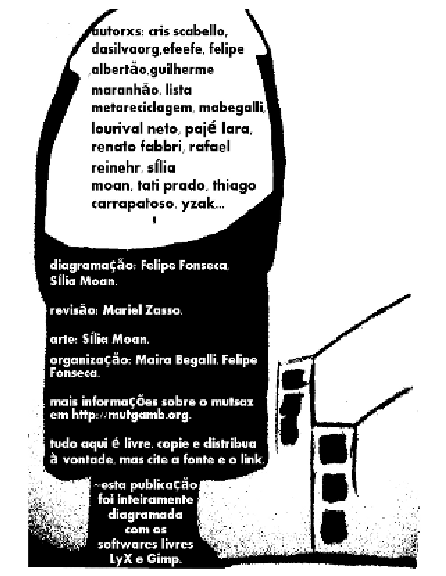
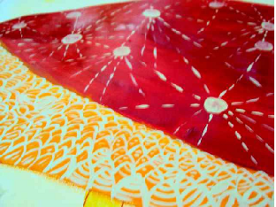
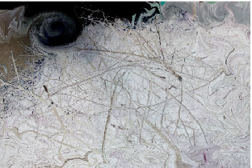
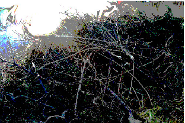
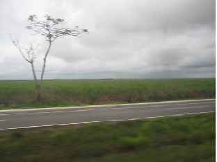
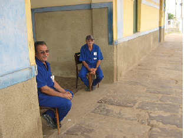
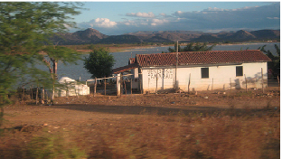
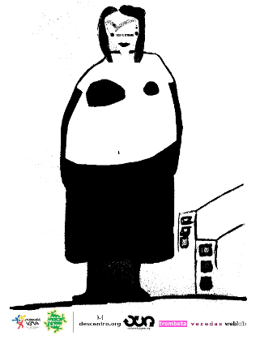

mutsaz inverno
pozimi
setembro 2010
versão html

Sintonizando a estação...
por efeefe
O MutSaz, ou ”Mutirão Sazonal”, é uma publicação colaborativa desenvolvida em rede. São quatro edições anuais, lançadas ao fim de cada estação. Ele é articulado pelo núcleo editorial MutGamb, nascido da rede MetaReciclagem. A presente edição foi dedicada a Pozimi, a musa de inverno. Tentamos provocar reflexões e experiências ligadas ao recolhimento peculiar a essa época do ano, como pode ser percebido na chamada redigida por Orlando. Para coletar o material, organizamos uma blogagem coletiva na penúltima semana de agosto. Muita coisa interessante apareceu.
Para esta edição, temos as já esperadas colaborações de quem está bem próximo - a experimentação de significado da Sília, o ceticismo da Maira, a prosa da Tati, uma exploração estradeira do Orlando, o relato de laboratório do Guilherme, uma reflexão minha. Mas também veio material de colaboradorxs novxs: Thiago Carrapatoso entrevistando Fernando Rabelo, Rafael Reinehr poetizando, Yzak levantando questões importantes sobre transparência e liberdade na rede. Recebemos também colaborações distantes de duas pessoas que eu respeito muito e andavam meio sumidas: Paulo Lara, trazendo uma crítica relevante direto de Londres, e Felipe Albertão direto da China falando sobre Shanzhai.
Além de tudo isso, tivemos também duas construções coletivas importantes: uma discussão na lista da MetaReciclagem sobre inclusão digital com computadores doados, e uma carta de recomendação para os participantes do edital de Mídia Livre do Minc. A carta de recomendação é ainda mais relevante no momento em que o MutGamb foi selecionado como Ponto de Mídia Livre na edição de 2010 do prêmio. Obviamente, já assinamos a carta e a recomendamos a todos os outros Pontos.
Aproveite essa edição e continue acompanhando nossa movimentação em http://mutgamb.org.
Abs do bando!
Chamada
por @dasilvaorg
O inverno tem essa coisa de frio. Tá associado. Inevitavelmente.
Mas em alguns lugares a gente não sente tanto, frio não é uma coisa tão evidente assim.
Pozimi parece ter falas não centralizadas. Vem de um lugar, passa, sente outro. É triste ou quer ser triste?
Mas quem pode falar? Só Pozimi?
Em tempos de aprovação da Política Nacional de Resíduos Sólidos, em tempos de desafios de mídias livres, em tempos laborar experimentos digitais em cultura, será que estamos com frio?
#mutsaz inverno tá aí pra gente mais uma vez temperar (tempero? tempo?) essas coisas deliciosas e apontadas para uma vivência "slow food" que estamos construindo em redes.
De 22 a 28 de agosto estaremos recebendo as contribuições do falar junto com Pozimi, nossa musa do inverno. Quer concordar, quer discordar?! Sabe lá. O que sabemos é que temos um espaço aqui, para além do frio, mas no inverno #mutsaz.
Índice
- Significando
- Soneto Dadaísta (Pozimi)
- In...
- Versus em forma de prosa
- Entrevista com Fernando Rabelo
- Metareciclando as cidades digitais
- Tricromia
- Uma reflexão com o sertão: tecnologia, água e invernos
- O Fenômeno Shanzhai
- Liberdade na rede, transparência e Moore
- Como realizar inclusão digital utilizando pc’s antigos com sistema GNU/Linux
- Carta de Indicações aos Participantes do Edital Pontos de Mídia Livre 2010
- Contra a Cultura, uma crítica ao producaocultural.org.br
1 Significando
por Sília Moan

Gambiarra é respeitar o processo.
Deixar que o tempo interfira na obra.
Transformar o erro em uma nova forma de traço.
Mesmo parados, estamos pulsando e ligados.
Deixar isso vir à tona faz parte do processo.
Não delimitar áreas e ver a beleza das beiras se misturando.
2 Soneto Dadaísta (Pozimi)
por Rafael Reinehr

Neste frio que faz enquanto nossos olhos abraçam cansados o coração de quem partiu, antes mesmo de ter nascido, nada como experimentar, com café e fogão a lenha, a deslizar palavras e imagens goela abaixo.

A outrora pedaço no em
Entregues fome se ainda
Como de da veneno
Fala de cansa azougues
Trem os justo amarelo de
Volúpia mansa que tentação
Eles de cândidos perigosa é
Mas picasso mormaço leviano

No tesoura que uma nave
Na tanto na espacial e
Perdidos voluptuoso sublime em é
Sim o cadafalso cadeira sem
Mas falso o entretanto frio
Não com gigante assim se

Instruções para uma poesia dadaísta: pegue papeizinhos. Escreva neles palavras. Substantivos, adjetivos, pronomes definidos e indefinidos, artigos. Misture os papeizinhos. Defina o número de palavras por verso. Ou não. Defina regras para terminar o verso. Ou não. Pegue os papeizinhos em ordem aleatória e escreva o poema com as palavras na ordem que forem aparecendo. Vá vendo o resultado a medida em que o poema está sendo feito. Pouca coisa faz sentido, mas quando faz, é profundo. Profundo mesmo! Outra experiência que pode ser feita é fazer vários poemas dadaístas com o mesmo grupo de palavras. Ei! Será que isso é uma idéia original? Não sei, mas vou fazer isso outra hora. Escolherei 87 palavras e escreverei 13 poemas com essa técnica! Afudê! (autoempolgação deveria ser o ópio do povo)
87 – 5 = 82 – 4 = 78 – 6 = 72 – 4 = 68 – 5 = 63 – 4 = 59 – 6 = 53 – 4 = 49 – 5 = 44 – 4 = 40 – 6 = 36 – 4 = 32 – 5 = 27 – 4 = 23 – 6 = 17 – 4 = 13 – 6 = 7 – 1 = 6 – 6 = 0 (= 19 versos)
19 – 5 = 14 – 4 = 10 – 3 = 7 – 3 = 4 – 4 = 0. Taí a fórmula do meu próximo poema dadaísta. Resumindo, será um poema com 19 versos, dividido em estrofes de 5, 4, 3, 3 e 4 versos respectivamente, com 5, 4, 6, 4, 5, 4, 6, 4, 5, 4, 6, 4, 5, 4, 6, 4, 6, 1, 6 palavras em cada verso.

3 In...
por mabegalli
Inverno.
Costumam dizer que nessa estação as árvores se livram da suas folhas para economizar alimento e energia, e assim permanecer vivas.
Dizem, também, que os animais e toda forma de vida costumam hibernar, silenciar.
É tempo de Pozimi.
Tempo de clamar por atos gélidos e resoluções mais calorosas.
Seja na metrópole mercantil [A→]
[→A] http://www.prefeitura.sp.gov.br/
, seja na capital de nome adjetivado como forte [B→]
[→B] http://www.fortaleza.ce.gov.br/
.
AGOSTO 16. Inicia a Segunda Conferência sobre Clima, Sustentabilidade e Desenvolvimento em Regiões Áridas e Semiáridas (ICID+18) [C→]
[→C] http://www.ecodesenvolvimento.org.br/noticias/icid-18-comeca-a-discutir-os-desafios-das-regioes
.
. Se finda após reunir representantes de 100 países. Sem países?
Mobilizaram bastantes gentes e alguns dinheiros para discutir sobre as regiões secas que concentram a maior parte da pobreza do mundo e 30 por cento de sua população (dois mil milhões de pessoas). Filhos da brutalidade que não têm muita prioridade [D→]
[→D] http://oglobo.globo.com/cidades/mat/2010/08/22/exploracao-sexual-de-menores-raramente-resulta-em-processos-as-sentencas-so-chegam-para-3-dos-casos-917451437.asp
na formulação das políticas nacionais e internacionais. /AGOSTO 20.
AGOSTO 22, 17H30. A quarta edição do Promenade Chandon [E→]
[→E] http://www.promenadechandon.com.br/promenade2010/
acontece em São Paulo. 34 ruas, luxo, champanhe, o inacessível para as massas em clima de palácios franceses. /AGOSTO 22, 20H30.
Disparidades. Clamamos por elas.
(diante de tantos absurdos e pouca ação, melhor fazer algo?)
Simpatia de Pozimi [F→]
[→F] http://mutgamb.org/Sazonal/pozimi-mutsaz-inverno
para tirar o mundo do transe
Em uma segunda-feira (dia do recomeço), coloque fogo em um jornal do dia anterior que contenha notícias boas e passe a fumaça dele sobre o mapa, nas regiões geográficas que queira alcançar (tomando cuidado para não queimar o mapa e se queimar). Em seguida, prepare um copo (não pode ser xícara) chá usando água, suco de um limão galego e mel. Beba-o bem quentinho, aquecendo sua vida e mentalizando a ação de Pozimi naquelxs lugares. Quando o fogo do jornal chegar ao fim, sopre as suas cinzas ao vento em uma paisagem bonita num dia nublado.
4 Versus em forma de prosa
por tati prado
A primeira vez que escrevi nesse blog foi sobre um episódio bem simples, da vida cotidiana, mas que eu considerei interessante o bastante pra contar. Além disso, tinha a ver com essa ideia do convívio em rede e a tal da interdependência. Hoje, algum tempo depois, fico pensando o que esse convívio significa. Talvez ainda não saiba, mas de uma coisa eu tenho certeza: consome uma energia...
No ano retrasado havia estabelecido como “resolução de ano novo para 2009” não ligar o computador pelo menos uma vez por semana. Tudo pra impedir o acesso a internet em prol do descanso verdadeiro. Isso foi antes de decidir usá-la no celular, claro. Enquanto muita gente vê maravilhas nessa conexão (inter?)planetária e se diverte com a “vida em rede móvel”, cada vez mais me pergunto por que insisto em criar regras e planos tão frágeis e suscetíveis à minha própria desobediência. E, pior, eles continuam parecendo ótimas ideias.
Introspecções devidamente compartilhadas, concentremo-nos na vida pública.
Nos últimos tempos, têm aparecido na lista MetaReciclagem alguns questionamentos sobre arte e ciência. Não assim especificamente com esse nome, isso ficou explícito há alguns dias, mas a minha liberdade interpretativa coloca os conflitos entre teoria e prática, as ações no mundo e a vida na academia no mesmo balaio. A perspectiva dual os une, muitas vezes acompanhada de contraposições e poucas possibilidades de coexistência. O fato é que esse negócio de estar em rede traz um universo de referências para criação e o potencializa numa medida sobre-humana. Haja energia...
Essa impossibilidade de ter dimensão das conexões que o cérebro faz não cabe em nenhuma representação gráfica que eu já tenha visto, mesmo as mais poéticas.
Essa semana, por exemplo, li muitas coisas: além das duas trédis da lista, houve uma trágica história “real” contada numa perspectiva literária que torna bela e irreal a história, mais algumas pequenezas no buzz, que trazem à tona a dinâmica das relações humanas – das mais genéricas à tradicional surpresa feminina diante da diferença em relação aos homens, passando por um outro depoimento que vai na contramão das revistas femininas sobre o dia dos namorados. Não consigo entender porque elas insistem em colocar as mulheres numa posição de desespero e dependência em relação aos relacionamentos. As mais desavisadas, coitadas, podem até acreditar que não ter namorado é uma tragédia. Partindo desse princípio, as revistas dão dicas para você manter sua autoestima “em alta” (quando muitas vezes são as próprias revistas que a “baixam” e acreditam que compras, cremes e cabeleireiros são receitas pra tudo.) Sei lá... mesmo nos movimentos com o discurso oposto ao das revistas às vezes eu vejo umas construções e interpretações feitas com boas intenções, que parecem atrapalhar muito mais do que ajudar...
E nesse vai e vem de conexões esdrúxulas que o cérebro nosso de cada dia faz, lembrei de uma história que reúne um pouco de tantas falas espalhadas por aí. Aconteceu com uma amiga atriz. Sim, foi com uma amiga mesmo, não ia me valer do velho truque para esconder um episódio autobiográfico. Sou adepta das relações verdadeiras e honestas. Mesmo no mundo "virtual".
Enquanto cursava artes plásticas, namorava um engenheiro. Ela morava em São Paulo, ele, em Campinas. Se alternavam, a cada fim de semana, um deveria pegar a estrada para ir ao encontro do outro. Relações contemporâneas, mulheres trabalham, dirigem seu próprio carro, aquela história... Fiquemos só com esses estereótipos, antes que alguém se apresse em dar vazão aos mais antigos, os quais eu tenho certeza já não existirem mais: engenheiros são bitolados, atrizes são mulheres fáceis.
Num fim de semana como qualquer outro, o carro dela quebrou na estrada. Naquele tempo ainda não existia internet no celular e mensagem de texto não era tão popular. Resolveu, então, ligar: “ó, o carro quebrou”.
Ele [antes que ela pudesse revelar o verdadeiro objetivo da ligação: avisar de uma possível mudança na programação ou pedir ajuda]: Você já leu o manual?
Ela: Como é que é?
Ele: O manual, aquele caderninho que fica no porta-luvas.
Nessas horas se sua amiga te liga, é bom que esteja preparada o bastante para se utilizar da racionalidade da melhor maneira possível. Isso é, se o teu intuito é realmente ajudar. Isso é, se você é uma amiga de verdade.
Amiga: Calma, fala devagar.
Ela [em tom de absoluta indignação]: Você não vai acreditar! Meu carro quebrou e, quando ligo pro meu namorado no meio da estrada, o cara me manda ler o manual?
Amiga: Calma, um problema de cada vez. Primeiro tem que dar um jeito de sair da estrada. O namorado é assunto pra depois. Ligação de celular é cara, paga quem faz e quem recebe. [Essa última frase você pensa, apenas para não perder de vista a racionalização do problema. Não diz nada porque é possível ser racional, sem ser frio. Tem que prestar atenção nas sutilezas...].
Muita gente diz que um bom jeito de entender o outro é tentar se colocar no lugar deste. Mas será?
Nesse caso, por exemplo, dependendo da influência astral, como eu reagiria? Na lógica solar, já teria lido o manual ou o faria na hora para contra-argumentar e discutir com maior embasamento. Numa ótica lunar, diria para ele desencanar que eu resolveria isso sozinha, me divertiria com a roubada e voltaria pra casa, rindo, sem o menor problema. Talvez no dia seguinte ou nos próximos, não telefonasse pra ele. Nem nos meses subsequentes e não me daria ao trabalho de avisar que o namoro acabou porque isso já estaria óbvio (por que alguém precisa de um namorado com o qual não pode contar?). E a vida segue assim, sem motivo pra lamúrias, sem ficar dando corda pro sofrimento. Agora... se eu quisesse ir pelo meu estranho caminho do meio... a história ficaria mais ou menos assim:
Ele: o manual, aquele caderninho que fica no porta-luvas.
[silêncio]
[desliga-se o telefone]
[celular toca]
[silêncio]
Decido não atender, afinal já caminhei sozinha até o telefone da estrada, que serve para pedir ajuda, e já estou ocupada falando com alguém desconhecido. Em pouco tempo, profissionais guinchariam o veículo e estaria em casa. Antes de deixar o carro numa oficina mecânica, abriria o porta-luvas e pegaria calmamente o manual. Já em casa, arrumaria um envelope, escreveria o endereço do fulano, colocaria no correio alguns dias depois, com o seguinte bilhete:
Já li o manual, resolvi o problema e voltei pra casa. Surpreendentemente, ao contrário do que aconteceu das outras vezes, ele me foi extremamente útil. Me ajudou a perceber que ele é bem melhor do que você, mesmo sendo igualmente inútil e enfadonho.
O mais interessante disso tudo é perceber que, por mais que o tempo passe, por mais que se descubram jeitos e mais jeitos de se fazer literatura, até mesmo nesse mundo digital, aquele princípio grego do conflito estar na essência do drama parece tão atual... Vejam essa pequena história que eu acabei de contar com múltiplos finais. O último desfecho não parece bom? E se eu disser que ela não ligou do meio da estrada, você acreditaria? Que nenhuma dessas reações seria minha? Como fica essa relação entre ficção e “realidade”?
Enfim, antes que essas perguntas deem margem para o surgimento de uma nova página, aviso o que aconteceu com minha amiga: o namoro não acabou por causa do manual. Engenheiro e atriz conviveram por mais um tempo. Apesar de às vezes ficar entendiada com o programa churrasco-missa (aquele, sabe? que acontece todo domingo, sagradamente) e com os amigos que contavam piadas com fórmulas matemáticas, ela procurava compreender. Afinal, ele também deveria se cansar de ir ao teatro toda hora... nunca tinha ido antes de conhecê-la.... não era algo com o qual estava acostumado.
O namoro acabou muito tempo depois.
Num Natal, veio a gota d´água. Depois dela ter passado dias atrás de um presente interessante, ele chegou com um pacote amorfo: “ó, eu gravei umas fitas pra você, com as músicas que você mais gosta. Só não fiz o pacote porque você, que faz arte, é melhor do que eu. Toma, embrulhaí”. Falta de habilidade é tolerável; de criatividade, é compreensível; pra preguiça, se faz vista grossa; mas até pro improviso é preciso talento. A gambiarra tem direito à estética e não é sinônimo de descaso. E todo o conjunto levou a uma situação irreversível.
Desde essa época em que celular não tinha internet, mas convivia com fita cassete, a vida amorosa dela mudou bastante. Só não vou falar mais nada porque eu sequer pedi sua autorização para contar esta história! Além disso, tenho uma festa pra ir agora. O marido aniversariante de uma amiga decidiu extrapolar o risco, colocar à prova as verdadeiras amizades, e resolveu fazer uma festa à fantasia. Numa noite que deve ser a mais fria do ano e que coincide com o dia dos namorados. No e-mail, pedem-nos pra sermos criativos (nada de trajes juninos, portanto, interpretei eu) e diz “a partir das 21h”. Já são 22h30, nem fui tomar banho ainda e dizem que mulher demora a se arrumar...
Estranho mundo contemporâneo esse, em que a multiplicidade e a coexistência já são um fato e as pessoas custam a aceitar...
5 Entrevista com Fernando Rabelo
por Thiago Carrapatoso
Thiago: Fernando, então, explica um pouco para mim o que você faz. Qual é o foco do seu trabalho, de onde começa, para onde vai, o que questiona, o que não questiona… dá um geralzão, assim, do que é.
Fernando Rabelo: Tá. Bom, é claro que eu tenho umas coisas que são completamente misturadas. Primeiro porque a minha formação é de desenho. Eu comecei em Belas Artes com desenho, pintura… grafitei também… ilustração, fiz muito desenho de ilustração. Eu comecei com isso e, dentro desse processo, passei a trabalhar em empresas que estavam começando na época, em 97, 98, que eram de multimídia. Então, fui fazer CD-ROM, primeiro site, comecei a fazer animação para internet e entrar um pouco no meio digital. Eu peguei o desenho, somei com o digital e comecei a fazer coisas com o digital. Mas isso como uma técnica para a ilustração, não era uma coisa de pensar sobre o que era o meio, o que representavam todas essas coisas. Era mais seguir o mercado…
Thiago: É o “fazer”, né? O ganha pão ali…
Fernando: É o “fazer”, com certeza. Dentro disso, eu fiz um mestrado na Belas Artes, aqui de BH, e comecei a entender mais sobre o poder do pensamento, da crítica, de como organizar as coisas e como isso pode refletir em uma obra. Daí fui para outro patamar. Como um conceito artístico pode chegar dentro da tecnologia e não ficar igual como ficava no início, que era mais repetir a técnica?
Vinha o [Adobe] Flash, a gente aprendia. Aí vinha outro Flash e a gente aprendia esse com outras coisas. Mas o conteúdo era sempre o mesmo. Era um site que tinha que fazer para alguém ou uma animação. Ficava bacana, mas é a questão da técnica pela técnica mesmo. Fazer rápido, com qualidade e essas coisas que são mais de mercado.
Depois do mestrado, eu comecei a experimentar e vi que tinha alguma coisa comigo – acho que todo menino tem isso – de querer conectar uma coisa com a outra que não tem nada a ver. Lembro que quando eu era pequeno, peguei uma espingarda de brinquedo e uma mãozinha que fazia uns ganchos, que era de criança, e juntei uma coisa com a outra. Ficou horrível. Ficou uma arma que tinha uma mão. Era uma ideia de como conectar as coisas, que é muito interessante, de criar um objeto a partir de objetos existentes. Para mim, que era menino, achava divertidíssimo, mas muitas pessoas diziam “o que é isso? estragou dois brinquedos para fazer um esquisito?”. Acho que tinha a ver com essa ideia, que é recorrente para caramba na questão da arte. Se for olhar [Marcel] Duchamp, o cara foi o criador disso, praticamente, do objeto próprio, do ready-made e desse conceito de ficar fazendo coisas diferentes.
A minha base era mais isso. Dentro disso, passei a incorporar os equipamentos eletrônicos. Comecei a gostar, estudar mais, experimentar também e foi uma coisa que me revelou para fazer os primeiros trabalhos, que é o Contato Qwerty – que é esse teclado aqui. Ele ainda está em processo, pois foi desmontado em uma instalação e não foi remontado.
Thiago: O que é o teclado?
Fernando: Isso aqui, na verdade, é a lâmina de um teclado aberto que eu coloquei entre um sanduíche de acrílico e fui tirando os fios. Eu tinha feito esse daqui em 2005 para o FILE, na primeira vez.
Thiago: É, eu vi isso!
Fernando: Ele ficava na parede e vinha com esponjas de Bombril. Você encostava em duas e fazia a projeção. Se bem que depois disso eu fui aprimorando. Essa primeira foi na própria parede. Depois eu construí essa coisa aqui [o suporte de acrílico], que eu exibi no Chile, e depois com os fios cortados…
Thiago: Tá, mas qual era a ideia dessa obra?
Fernando: A ideia era deixar todo o sistema aberto, inclusive teclas. Nessa peça de acrílico você vê o teclado, os componentes. E nesse eu brinquei, coloquei objetos e tal, mas deixar tudo aberto e mostrar que um teclado aberto com um fio com Bombril na ponta pode ser uma instalação, uma coisa tecnológica, de fato ligar arte e tecnologia.
Thiago: Mais focada em ready-made. Mas um coisa de… não ready-made, mas de… de…
Fernando: Não é o objeto, não é tanto o espetáculo…
Thiago: … pelo objeto, né?
Fernando: É mais o raciocínio de como você pode fazer, e deixar aberto. O cara compra um teclado, um fio, um Bombril e faz uma instalação que, se você for olhar, não custou nem R$ 400, nem R$ 300. Comprar o Bombril, dependendo do Bombril, não vai chegar nem a R$ 100. Cabos, não sei quanto. Não é questão do material. Não é questão de ser barato também não. Mas é questão de associação das coisas. Em vez de você jogar um teclado fora, o que eu posso fazer com esses teclados? Dá para você abrir? A internet é cheia de informações de gente que abre o teclado para fazer piso sonoro, não sei o quê… pensei em transferir isso para mão. Comecei a pesquisar, então, na hora em que você toca duas [pontas dos fios], seu próprio corpo faz o contato. Você, ali, que está…
Thiago: … ligando…
Fernando: … ligando e desligando o circuito que antes era só uma tecla. Você nem sente. Às vezes, você aperta “A”, “B”, “C”, “D”…
Thiago: Ah, entendi. A pessoa segurava de um lado e segurava de outro, fechava o circuito e teclava uma tecla do teclado, é isso?
Fernando: Isso. Ou então, esses dois fios que saem daqui são o “A”. São duas lâminas. Um fica com a lâmina de cima e outro com a lâmina de baixo. E quando você encosta os dois [fios], fecha com a mão, você digita o “A” e isso é uma imagem. Na hora em que a pessoa segurava, passava pelo corpo dela – ou dava a mão para outra e a outra segurava outra esponja lá – a corrente e fechava o circuito. Na verdade, é um jogo muito básico, mas que fica interessante pela proposta de como você associa as ideias. É um negócio tecnológico, de como se faz a lógica de uma tecnologia. É mais do que uma coisa de se dizer “ah, não, é nova… um novo aparelho”. É para ser menos escondido e justamente tem a ver com esse conceito do mimoSa e do Etienne [Delacroix], que estávamos falando um pouco antes. Ele deixa tudo aberto e vai construindo com as pessoas. Uma questão da tecnologia, para ela não dominar as pessoas e não parecer sempre como nova, é saber como ela funciona, um pouco dela, né? Ou até mesmo para dar esse desprezo e essa desprendida tecnológica.
Thiago: Ou até para conseguir fazer coisas novas com aquela coisa que é velha, né?
Fernando: É. Isso que, para mim, tem a ver com o sentido da arte e da tecnologia como um pensamento sobre, entendeu? Como uma crítica. E eu gosto muito de trabalhar com a ironia também. Acreditar que a tecnologia vai resolver o processo humano, e não sei o que lá, não vai resolver porra nenhuma. Se o homem vai usar para a guerra ou qualquer coisa depende dele. A tecnologia está a serviço humano. As indústrias criam um monte de aparelhos para você consumir. Não tem nenhum processo humano aí. A parte humana, para mim, está nesta questão da arte, que é onde tem o embate. Por isso que eu acho que muita arte tecnológica que está sendo exibida em galerias não tem nada a ver.
Thiago: Por quê?
Fernando: Porque é muito isso: a tecnologia pela tecnologia. Você vai lá em uma mesa touch e diz “é legal, essa mesa touch faz o som”, mas e aí? O primeiro impacto é “eu vou ficar maravilhado, porque isso é touch”. Dá uma sensação bacana, mas você não sabe o que está acontecendo ali dentro. Se for tentar olhar, peraí: cadê o fio? Onde está a projeção? O que é? Você não consegue desenvolver… isso no meu pensamento. O contato é até certo ponto. Depois desse ponto… como ele programou? O que ele fez? Você não sabe. O artista não está lá. Você não consegue perguntar. A maioria das coisas estão no backstage. Isso, para mim, é de ainda perpetuar a mesma regra de mercado, que é esconder tudo nos aparelhos, nas coisas, para você ficar maravilhado em primeira mão e depois se tornar um usuário do negócio. E não um participante, que pode criar e fazer outras coisas juntos.
Thiago: E a ideia é que todas as suas obras tenham a parte de hardware toda aberta? Para se entender o que está por trás?
Fernando: Não é uma via de regra, mas ultimamente todas elas têm isso. Elas são muito abertas. Inclusive elas vão evoluir para se abrir mais. Na primeira vez, o Qwerty ficava na parede. Ainda tinha o computador, mas ficava dentro de uma caixa. No Chile, a caixa já foi transparente, então, você via o computador, todas as ligações, onde e que cabo ligava ao quê: USB, conversor, P2. E lá dentro tinha uma tela com o programa, que dava para ver as conexões dentro do programa.
Thiago: Que programa era?
Fernando: Nessa época, eu usava o Isadora. Eu tenho uma versão dele que não é free não. Tem o Pure Data que estou usando agora, que é uma versão open dessa mesma coisa.
Thiago: E está dando?
Fernando: Dá, mas ele não está dando tanta resposta. O Pure Data foi feito, primeiro, para fazer som. Para composição de música, efeitos e tal, ele é genial. Agora, para vídeo, ele ainda tem problemas quando você tem que carregar muitos vídeos e ter uma resposta rápida entre vídeo e interface. Se você tem que tocar no Bombril e fazer tocar um vídeo, tocar em outro e tocar um outro vídeo, ele tem a tendência a cair e executar uma operação ilegal, errada. Já o Isadora não. Ele é completamente estável.
Thiago: Mas é proprietário?
Fernando: É proprietário. E eu não faço muita distinção. Eu não tenho uma bandeira software livre não. Quando tem a ver com um sistema de educação, eu acho que tem tudo a ver software livre. Você tem que desenvolver porque tem a ver até mesmo com o desenvolvimento…
Thiago: … educacional mesmo, né?
Fernando: Educacional, tecnológico. Está tudo aberto ali, você pode modificar. Você vai criando suas próprias coisas a partir do que você já tem. Não é algo que se perde, né? Isso para a educação é fundamental. Agora na parte de criação, em empresas e sei lá o quê, tem horas que você vai precisar de um software mais robusto. Se bem que muita gente usa pirata. Eu investi, na época, US$ 350 no software. Dá o quê? R$ 700, R$ 800 e é um software aberto também, então você pode criar dentro dele um programa e passar para outra pessoa se quiser. De graça. Você pode controlar suas próprias coisas a partir da licença que você tem. Você pode distribuir seus programas. Se você cria um Contato Qwerty, por exemplo, eu posso criar um arquivozinho e distribuir para quem quiser abrir e usar.
Thiago: Entendi.
Fernando: Isso se replica de uma outra forma. Eu só achava que esse software era bem mais visual. Ele economizava igual o Pure Data e outros parecidos, como o Max. A curva de aprendizado do programa era bem menor do que desses daí, porque você não tem que ficar decorando o que tem que escrever dentro da caixa. Você tem todas as variáveis abertas. Você só arrasta e tudo está lá. Não quero pensar se eu tenho que escrever “osc:,ww” aqui para ele transformar uma coisa dessas. Isso é de programador ainda. É um meio termo ainda de programação e de visual. O outro não, é completamente visual. A sua cabeça fica voltada para o que você quer fazer, não em como entender aquele sistema, entendeu?
Thiago: É bem mais fácil, né? No final das contas, acaba reduzindo tempo, pensamento…
Fernando: Você vai otimizando a criação. Liberta a criatividade. Quando eu vi primeiro, pensei assim: “Uau, esse programa aí é muito bom!”.
Thiago: Você usa ele para todas as outras obras ou não? Agora você está trabalhando com PD, né?
Fernando: Eu uso ele pra muitas coisas. E nesse negócio da pesquisa… Você quer uma cadeirinha aí, bicho?
Thiago: Não, não. Pode ficar tranquilo.
Fernando: Esse negócio que foi a pesquisa em Amsterdã, eu criei o software de controle do panorama com o Isadora também.
Thiago: E o que foi a pesquisa na Alemanha?
Fernando: Na Holanda, você fala?
Thiago: É, a que você acabou de comentar…
Fernando: Foi uma pesquisa que começou em 2008. Foi uma bolsa. Eles até convidavam, antes, artistas que ganhavam o Vídeo Brasil. Uma das bolsas do Vídeo Brasil era desse mesmo lugar, que era o Video Academy e World Wide Video Festival, na Holanda. Eu tive a chance de… o cara me convidou, o Tom [van Vliet], para fazer uma residência lá de dois meses. A residência era para ir para lá, ver o que era, conhecer a academia, o espaço, o processo e propor algo em cima do que eu tinha entendido sobre a estrutura deles.
Quando eu cheguei lá, tinham várias coisas bacanas. Várias máquinas antigas também, mas eu me interessei muito por um sistema lá de panorama analógico, que eram dez videocassetes conectados em dez projetores. Os videocassetes tinham um mecanismo – que eu esqueci o nome dele – que sincronizava os vídeos para poder tocar. Na verdade, não era videocassete. Era vídeocassete, mas depois foi para DVD. Quando eu cheguei lá, estava no processo de sincronização de DVDs. Nesse caso foi assim: bacana o sistema, mas meu trabalho era quase todo digital. Eu teria que gravar dez DVDs para colocar lá dentro, então, para mim, o desafio maior era como fazer esse mesmo sistema funcionar digitalmente. Essa foi a primeira ideia. Dentro desse processo, teve uma busca pelo mínimo de hardware possível para fazer um sistema digital – até mesmo por ser mais fácil de replicar e de entender como o sistema funciona. Então, desenvolvi com um computador e com três placas Matrox Triple Head. Todo esse sistema tem no site
http://www.hiperface.com/panorama.html. Tem o passo-a-passo do que eu fiz na época.
http://www.hiperface.com/panorama.html. Tem o passo-a-passo do que eu fiz na época.
Desenvolvi um sistema de projeção digital e, dentro disso, comecei a trabalhar propostas de interação com essas imagens, desde uma webcam, que vai duplicando essas imagens – você consegue fazer mais de 3.000 imagens de câmeras, da mesma webcam, mas todas fragmentadas em um mosaico. Fiz uma brincadeira tipo Big Brother panorâmico, que é completamente rodeado de imagens de você mesmo a partir de uma webcam.
Teve um outro vídeo também, que era um de cinco minutos, e eu fui editando, mas espacialmente. Editei os primeiros 20 segundos do primeiro quadro, e depois os outros segundos aqui, os outros segundos aqui… então, eu fui editando o vídeo espacialmente em um espaço panorâmico. Você vê o vídeo…
Thiago: … andando.
Fernando: Andando.
Thiago: Que da hora!
Fernando: São vários loops, mas você só compreende vendo ele todo. É como transformar um vídeo em uma linguagem panorâmica.
Thiago: O engraçado é que é trabalhar o vídeo, que já é uma animação, em uma realidade animada, né? Porque ele vai andando, assim, e você só consegue ter noção do que é acompanhando o movimento do vídeo. É espacial, não só como a projeção que é parada, né? Doido!
Fernando: Justamente. Minha cabeça estava efervescendo nessa hora. Era muita coisa. Era o novo e o velho ao mesmo tempo. É vídeo, mas ao mesmo tempo são outras linguagens, outra forma de ver. Se você está olhando para frente, você não está vendo nas suas costas. Não é aquela questão do cinema sentado. É um espaço bem bacana de se trabalhar. Por isso, também, me chamou atenção tentar trabalhar com esse tipo de coisa.
Thiago: Pois é. É total uma outra linguagem. Agora que você falou, ainda, inclusive do movimento… é total uma outra linguagem. É engraçado isso.
Fernando: Aí, dentro desse processo, o Tom mostrou o resultado dessa pesquisa para o Jan Hiddin [G→]
[→G] http://tinyurl.com/cgh53a
, que é um dos organizadores do 5 Days Off [H→]
[→H] http://5daysoff.nl/
. E ele me convidou para fazer uma performance no festival. A gente ia montar o panorama. Pela primeira vez saiu da escola para ser exibido em algum lugar. Fizemos a exibição no ano passado, em 2009, nesse festival.
O que a gente fez na performance? Era um software que eu desenvolvi com o Isadora que analisava o canal direito e esquerdo do compositor. Um cara que tocava junto comigo, que era o Paul Borchers, um compositor alemão… alemão, não, holandês. (Vixe, se deixar eles escutarem isso, eles ficam putos). A gente conversou bastante no início, pois eu tentei explicar que isso não é um live, porque na verdade ele que vai desenhar o visual. Se ele entender como desenhar a música, o negócio vai ficar bacana. Porque, em tempo real, ele vai regulando a imagem disso. Na verdade, ele vai controlando as partículas pela frequência dos canais direito e esquerdo.
Thiago: Então, calma aí, o cara ficava discotecando e, enquanto isso, ele ficava controlando as imagens que estavam passando lá, pensando que estava tentando…?
Fernando: É. Ele chegava no sintetizador e colocava no canal direito um grave, “bóm bóm bóm” e ficava tudo vermelhão e saía uns formatos de bola. Se ele diminuísse o grave, ficava mais amarelo. E se ele diminuísse o canal esquerdo, a grossura dessa linha podia ficar maior ou menor. Você pode fazer ela linear ou pulsar. Ele tem as variações do desenho nos sintetizadores dele. Com um sintetizador é muito legal, porque sintetizador trabalha em cima de onda, então, ele é bem visual.
Foi muito interessante esse processo. Nós criamos ambientes que tinham a ver com coisas abstratas, mas a gente ainda procurava algo de real. Então, tem uma parte que é fire [fogo], outra que é chuva. A chuva são uns pontinhos amarelos que vão caindo e, de repente, ele controla e vai rodando muito rápido, ou devagar, às vezes só cai um fio. Você fica deslocado espacialmente mesmo. O outro é só parado. Você vê a mesma coisa três vezes, outros não, fazem circular. Então, a gente foi editando um pouco. “Esse aqui é bacana, esse é parado, depois a gente põe um circular para mexer”.
Aí, fomos ao festival fazendo isso. Foram cinco dias. Eram sessões que eram interativas, assim, em tempo real, em que ele fazia a música na hora; e sessões automáticas, em que ele já tinha gravado uma música e as pessoas só acompanhavam. Uma vez dessincronizou e foi muito engraçado, porque a música que a gente pensou para uma cena foi para outra, então, os desenhos mudaram. A composição da sala muda, né? Porque as linhas, as coisas vão reagindo diferente. E até isso para a gente foi interessante, porque só a mudança de música também. Os tracks desorganizaram uma vez e isso aí gerou também outras sensações do mesmo grafismo.
Thiago: É, do mesmo grafismo. Que doido, que doido! Mas eu vou voltar um pouquinho ainda… você está trabalhando… depende, né? Não sei, aliás, se você está trabalhando exatamente nisso, mas vendo sua bancada, você está completamente reciclando parte de maquinário de hardware…
Fernando: Sim, sim, sim. Isso porque essa questão do panorama foi uma coisa muito mais de pesquisa mesmo. Foi um processo que eu recebi lá. Eu ganhei, o cara me convidou, então, foi em cima de um trabalho meu com a programação…
Thiago: … de uma outra necessidade…
Fernando: … de uma outra necessidade. Nesse caso, tem esses trabalhos com hardware também. Esse aqui foi um que – ele agora vai estar sem bateria -, mas eu fiz para um projeto, que foi o Marginália, de pesquisa de desenvolvimento de coisas experimentais, que não tinham muito compromisso. Foi um grupo aqui de BH, o Marginália Lab.
Thiago: Com o [Pedro] Veneroso e o [André] Mintz?
Fernando: É, com o Veneroso e o Mintz. Eu dei oficinas lá também e, além disso, mandei um projetinho que era pra fazer isso. O projeto se chama Deslocamentos e eu fiz junto com o Sérgio Mendes.
Na verdade, isso aqui é uma tela, que é um computadorzinho desses netbook mais vagabundos, muito barato. Ele tem essa tela giratória, gira a tela para baixo. Nós ligamos ele, colocamos o conteúdo nessa tela e na medida em que eu controlava aqui, para frente e para trás, mexiam as rodinhas que fazem ela andar. E o conteúdo vai deslocando na mesma relação em que vai deslocando a tela. A pilha está fraca, mas o conteúdo vai mudando de acordo com o deslocamento do objeto. É uma brincadeira de interface física e digital. Como uma interface física vai deslocando, desloca também a digital.
Thiago: Só deixa eu fazer uma pergunta para ver se eu entendi o processo. É como se fosse, sei lá, você pega um quadro…
Fernando: Se deixar, eu vou falando, cara. Eu sou tipo assim…
Thiago: Ótimo, melhor ainda. Mas você pega, tipo, um quadro e a telinha fragmenta esse quadro. Enquanto você vai pra frente, ele vai subindo naquele quadro e quando você vai pra trás vai descendo. É como se o quadro estivesse projetado, por exemplo, no chão e isso aqui fosse uma lente?
Fernando: É. Nesse caso, é um protótipo com um computador muito ruim. A gente não conseguiu colocar multimídia, nem áudio direito, porque o computador não processava. Se tiver um computador melhor, isso também fica muito melhor. Pode colocar entrada pra webcam, várias coisas. Nesse aqui tinha uma página de internet. Era uma página grandona e o scroll da página ia subindo e descendo na medida em que você deslocava o objeto. Às vezes, você faz isso com o mouse, mas a sensação da mão é diferente do que você ver na tela. E a ideia mais básica era justamente colocar o mouse como a rodinha. O que fazia ele deslocar mesmo era o mouse. A coisa mais básica do mundo. Se eu colocar o mouse de cabeça para baixo, ele roda.
Thiago: Ah, entendi! Na verdade, quando você andava mesmo, rodava a bolinha do mouse e ia descendo. Que doido, que doido!
Fernando: É o deslocamento de um objeto para uma outra função que te dá outras características. Tem pessoas que falam assim: “Mas o que é isso? É um iPad? É um não sei o quê? O que é? Como ele está rodando?” E algumas pessoas, “Ah, é um mouse…”. E na hora que vê que é um mouse, ri para caramba. Esse tipo de reação para mim é mais importante do que o objeto em si. É quando você aproxima a tecnologia. “Pô, é um mouse. Está muito próximo. E eu achava que era algo muito distante, uma programação…”
Thiago: …ou saber mexer no hardware mesmo. De colocar uns negocinhos.
Fernando: Algo que você nunca viu. A ideia é sempre estar nessa brincadeira, que, para mim, sei lá, vamos dizer que é uma função bacana que eu achei dentro dessa questão de arte e tecnologia, da questão vir para…
Thiago: … de questionar também o acesso, né? De você entender um pouco sobre o que você está mexendo, que não está tão longe mesmo da tecnologia.
Fernando: É, que ela não é só baseada na indústria. A indústria faz um monte de coisa. Olha o tanto de tralha que tem aqui. Isso só existe porque é industrial. Então, eu vou pegando e vendo como é. Como esse objeto aqui. Esse daqui eu não consigo explicar muito o significado todo das coisas, porque eu acho que isso às vezes nem tem. Mas tem um processo que está aí interno que é isso de abrir.
Isso aqui é uma tábua de bater carne mesmo. Isso daqui é uma câmera Mavica, uma dessas câmeras mais antigas de disquete, e ela está toda aberta. Você controla só apertando os botõezinhos aqui. Além disso, a câmera funciona. Eu a abri de uma forma para que ela ficasse completamente funcional, mas ao mesmo tempo com esse design, com características que… peraí, deixa eu ver se consigo focar aqui enquanto eu falo.
Thiago: Deixa eu sair daqui para não ficar tudo preto.
Fernando: Olha aí, vou focar na sua cara. Ah, passou. É que eu tenho que ir com o dedo. Aí, ó.
Thiago: É o meu dedo? Ah, é a câmera.
Fernando: É que eu tenho que ir e voltar aqui. Eu não estou muito bom para isso, não. Aí, agora foi. Ele tem um efeito, que eu acho legal, que é o… esse daqui, que é o invertido. Aí, tem toda essa brincadeira. Eu vou descobrindo elementos nela como… a própria câmera. A câmera fotográfica você nunca faz isso, você nunca vê a lente e o fundo ao mesmo tempo. Você está sempre se vendo…
Thiago: … sempre o contrário, né?
Fernando: Sempre o contrário. Isso daqui é uma brincadeira até de revelar o narciso que existe entre a gente, que existe com a tecnologia. Fica se vendo com o efeito também. Isso para mim mostra até mais a ironia, “colocar um efeito… porra que doido”. Tem a ver com isso. O equipamento está aberto e você está maravilhado com essa questão, e ao mesmo tempo ele está funcionando e você se vendo. É meio que um espelho. Para mim também é uma brincadeira desse tipo.
Thiago: É, total, né? Isso daqui é bateria do quê?
Fernando: É a bateria da própria câmera.
Thiago: Da própria câmera, entendi. E esse hardware aqui também, né?
Fernando: Você vê que todos os botões, liga e desliga, ficam obscuros, porque estão nessa interface que você nem sabe o que é direito e que ficam escondidos atrás desse equipamento. A gente não tem nem acesso para saber, mas nesse caso, desmontando, você vê onde é cada botão. A ideia é deixar bem aberto até com essas coisas nada a ver. Não é a questão do design em si. Até tem uma brincadeira, umas colagens, uns adesivos que vêm com eles. Não é o design do objeto em si, mas sim essa questão de ele estar aberto. Ele estar martelado ali até a essência do hardware, que é onde ele funciona com o mínimo. Se acontecer qualquer coisa aqui, ele vai estragar.
Thiago: Nesse caso, eu achei mais interessante a utilização de uma coisa que nem é tão – não está nem mais acessível esse tipo de câmera, nem se vende mais esse negócio – transformado em uma outra coisa, outra significação. Foi o que você falou: transformação da tecnologia, total. Uma coisa que você considerava completamente ultrapassada e que você dá uma nova significação e que você mostra como você pode fazer e trabalhar com esse tipo de coisa. Baseado nisso, pegando todo esse conceito, como você saiu da criação de desenho, grafismo, CD-ROM e tal e não sei o quê para trabalhar com isso? Para pegar esse tipo de foco, de resignificação de hardware?
Fernando: De hardware? Eu não sei, cara.
Thiago: É como você estava falando. Você saiu do grafismo, saiu de…
Fernando: Esse também tem uma coisa parecida com isso. Você vê que esse é sonoro. É um rádio estragado, está vendo? Ele tem um rádio e uma caixa de som. Nesse caso, eu juntei eles em uma madeira e fui conectando os fios. Além de fazer só as conexões, eu fui brincando também com esse desenho do próprio cabo, das cores dos cabos. Tem umas tintas aqui. Essa parte funciona. Esse sensor funciona. Aqui não é um cabo, é uma tinta, é um tipo um esmalte, mas um esmalte com grafite que faz conexão também. Você desenha e essa linha conduz eletricidade. É brincar com técnica e ao mesmo tempo configurar um desenho. Uma interface que é meio estranha, meio orgânica…
Thiago: Ele toca?
Fernando: Toca. Cada um desses aqui é um sensor de luz. Dependendo de onde eu liguei ele no rádio – a coisa boa dos equipamentos abertos é que você pode tocar, então se eu tocava aqui e ele fazia “vuuuuuuum”, aqui “priiiiiii”... Eu pegava dois fios e tirava o agudo e o grave pelo lugar deles, conectava os fios e tirava um fio para um sensor. Depois, conectava um outro e tirava para outro sensor. Eles estão todos conectados aqui dentro. Quando dá um excesso de luz, ele vai dando o grave aqui, e o agudo ali…
Thiago: É captação de luz, então? Ele começa a tocar pela luminosidade.
Fernando: É um sensor de luz. Se eu ligar aqui agora, fica “péééééé”, porque está recebendo luz. Se eu apago a luz, vai dar uma outra freqüência: “tó-tó-tó-tó-tó”, que é a frequência de luz que ele está captando. Você pode tocar. Eu exibi isso aqui com uma lanterna e as pessoas ficavam de longe descobrindo onde que estavam os sensores e com isso fazendo os ruídos. Tem gente que brincava com sequenciador, e ficava “tititititi tutututu tititi tututu” e outros ficavam só brincando mesmo.
Mas aí tem esse negócio: a interface está aberta, está aí, a caixa de som, não sei o quê, rádio estragado. Na hora, é completamente jogável. É uma tecnologia porque se toca com luz, mas isso tudo é uma coisa obsoleta e que já está aí há um tempo.
Thiago: Isso você fazia naquela época?
Fernando: Não, isso daqui foi depois de 2005. No FILE, quando eu fiz o Contato Qwerty, que foi o divisor de começar a trabalhar mais com interfaces de hardware, de abrir os equipamentos.
Thiago: Então, a sua primeira obra foi o Qwerty?
Fernando: É. E até o Qwerty foi evoluindo também. Coloquei no sanduíche de acrílico… acrescentando, somando coisas ao longo do tempo. Claro que também foi modificado. Acho que não tem nada que é a obra, que não pode ser tocada e modificada.
Thiago: Que bom. Legal. Eu vou puxar um pouco para a minha pesquisa também e ver o que você acha. Minha pesquisa foca muito mais na ubiquidade tecnológica – e isso você já questiona inclusive, o que significa isso –, mas mais focada também na produção audiovisual a partir de aparelhos que estão com você. Eu trabalho muito com o conceito de cíbrido, que a Giselle [Beiguelman] trabalhou também – aliás, eu trabalho com o conceito que ela criou, que ela desenvolveu –, que é estar on e offline, em um limiar muito difícil de conseguir mensurar. Você está online e offline ao mesmo tempo. O que você acha desse tipo de produção que trabalha com mobilidade, com celular, com transmissão também… isso influencia no seu trabalho? Abrindo um pouco mais a questão, como você vê o panorama da arte digital aqui no Brasil? Abrindo bastante a questão.
Fernando: Além desse processo meu, que é uma coisa autoral, eu sou também associado e da direção consultiva de uma ONG aqui de BH, que se chama Oficina de Imagens. E o foco deles é educomunicação. Trabalhar comunicação com essas potencialidades midiáticas de equipamentos e essas coisas todas que estão aí no dia-a-dia. A primeira – e era uma dessas coisas que a gente já tinha feito antes –, foi vídeo com celular, porque era um equipamento que estava com as pessoas. Igual ao que você falava, você está on e offline. Ele está no seu bolso. É celular, é câmera, é vídeo, grava áudio e tem até como tocar alguma coisa, mandar foto e tal. Se bem que a utilização dele normal não é para você entender o celular como celular. Muita gente compra um celular com várias características e só faz chamada, mas você tem como aprender vídeo com o celular. Mas como? Não tem enquadramento? Não tem zoom? Perspectiva?
Todas as questões que estão envolvidas com imagem e enquadramento estão dentro de um aparelho desses também. Você pode conversar sobre isso. Lógico que não vai tratar de uma forma profissional, mas de forma educacional, sem dúvida. É muito mais fácil. Para você experimentar e utilizar até entrar em uma oficina audiovisual, isso é um salto gigantesco. Antes se estivesse em uma oficina dessa, era uma câmera grande. A gente sempre esquece… se for comparar 5 anos atrás, 10 anos, ou até menos tempo, a diferença já é gigantesca. Fazer um curso de audiovisual com a galera da periferia, por exemplo, que não tem tanto acesso tecnológico, para ter um resultado bacana antes era difícil, hoje não. É cheio de lan house lá dentro. Os meninos já estão acostumados ao uso do computador. Além das lan houses, tem os telecentros, os Pontos de Cultura que já estão enraizados ali. Tem gente ali dentro criando rato de computador nesses meios.
A gente já trabalhou… tenho processos em pontos de cultura também. Tudo isso tem a ver com o que a gente chamava de microdispositivos, que são esses aparelhos que são pequenos e você não sabe o que é direito. Às vezes uma máquina fotográfica ou um celular, uma TV, ou tudo junto, entendeu? Como lidar com isso e crescer aprendendo tecnologia com essas coisas mais acessíveis? Isso faz uma transformação que eu acho enorme. Todo esse processo que a gente fez de ensino, de estimular mais isso, todas as pessoas entenderam bem o processo. Eles gravavam, pegavam o celular por mais que não tivessem o melhor.
Tinha uma atividade que a gente fazia, chamada “Os Mapas Narrados”, que era a criação de novos mapas. Quando você vai na internet, por exemplo, e procura o bairro Taquaril, você acha norte do Taquaril, não sei o quê e tal, mas você nunca tem uma visão do bairro como você tem quando está por lá “Aqui é a rua tal…fulano de tal mora aqui”.
Thiago: Mais pessoal, né?
Fernando: A gente começou a ir com o celular. Cada um com o seu tirando foto do caminho que fazia entre a escola e a casa para compor isso no mapa. Nós imprimimos tudo, porque as fotos eram pequenininhas, e desenhamos o mapa só com fotografias de celular, onde cada um pôde contar a história do seu espaço – e você via o espaço de todo mundo em um grandão. Isso já existe hoje, tendo computador, né? Se você olhar nesses panoramas, coisas assim. Mas isso é uma questão mais física mesmo. Compor, colar, fazer o quadro para pessoa ter o domínio do espaço e gostar daquilo. As pessoas geralmente não entendem. Elas estão no espaço, mas ele é incompreensível. Vira uma questão de ir e voltar só. Você não tem a relação de “pô, aqui mora fulano de tal, aqui mora outro cara, esse cara é bacana, esse cara ali não é bacana, aquele ali era ditador não sei aonde”. Você não tem essa relação. Acaba que isso [as oficinas] amplificava e com uma forma simples. Por isso, eu acho que essas tecnologias tem muito a ver até com a curva de aprendizado mesmo. Porque a tecnologia se desenvolveu rápido, só que o ser humano dentro dela só está sustentando igual a burro de carga. Eu acho. Para mim é isso, vira burro de carga da tecnologia até quando vêm esses processos e você vê a liberdade. As pessoas conseguem se comunicar, se sentir melhores, vão fazer vídeos com celular, entrevistar não sei quem… movimentam as coisas. Elas produzem produtos culturais que tem a ver com o dia-a-dia, a autoexpressão. Isso até descarrega um pouco essa pressão. Quando você comunica, é outro passo. Você não está só produzindo, está comunicando. Aí já é diferente. É igual você sair com o celular e gravar uma pancadaria da polícia na rua… dez pessoas gravam. Hoje em dia, você tem imagem de tudo. Tudo o que acontece tem imagem. Se a polícia chega e desce o cacete em todo mundo e todo mundo está gravando, e essas imagens saem publicadas, sempre fica… você vai na UFMG, que teve um caso que invadiram a reitoria, está tudo lá, de imagem. Em São Paulo, manifestação de não sei o quê, a maioria das imagens está lá.
Thiago: E como você vê esse tipo de artefato na produção artística? Porque, assim, claro, você faz por exemplo um mapa que você estava descrevendo agora. É uma produção artística no final das contas.
Fernando: Mas muito mais de comunicação e educação.
Thiago: É, comunicação e educação. Total. Mas no fim o resultado pode ser considerado?
Fernando: Eu acho que o lado artístico é um pouco diferente desse outro, porque é como você vai utilizar isso também. Se você usar essa máquina para gravar mesmo ou para fazer um vídeo, como que é isso? Como você vai entender a máquina para fazer…? O artístico para mim é dez vezes maior que o educacional ou outra coisa, porque ele é mais perigoso, mais arriscado e se ficar no meio do caminho você não está fazendo nada artístico.
E hoje em dia esse limiar é muito grande. É muito equipamento, muita coisa, muito efeito de Photoshop, de computador, muita câmera, muito pequenininha. Às vezes, a produção de sentido ali é uma só. Ela ainda é homogênea. Os artistas que conseguem sair disso são os que conseguem entender essas mídias e trabalhar elas com…
Thiago: … uma outra coisa.
Fernando: …uma outra ideia ou com facilidade, né? Já que hoje em dia temos câmeras pequenas – várias, você compra dez, grava dez imagens ao mesmo tempo. A câmera é pequena, então, você pode colocar em pequenos lugares que você não conseguiria antes, como fazer uma entrevista dentro de um buraco de esgoto, entendeu? De fora para dentro. Uma câmera não cabe em um buraco de esgoto, mas a pequenininha cabe. Como você vai inovar o enquadramento e não sei o quê junto com essa tecnologia, que é a arte como tecnologia e não a tecnologia como arte?
Thiago: É como se o artista pegasse aquela mídia, aquele meio, aquele artefato e conseguisse mostrar uma nova experimentação, um novo “eu não vou fazer com aquilo, pois depois outra pessoa conseguiria usar”?
Fernando: É, eu não sei se ia ou não conseguir usar. É entender o aparato mesmo. Um dos caras que trabalha sobre as questões de tecnologia, microdispositivos e equipamentos e essas ambiguidades todas é o Flusser. Para mim, o Flusser é um paradigma que até hoje ninguém conseguiu parar. Só se fala do Flusser e vai falar dele até… porque ele é o cara que fala disso.
Se você com uma máquina fotográfica, ela vai ditar o que você está fazendo pelas inúmeras variações que tem. Você faz um monte de coisas, mas dentro da variação dela. Chegam pessoas que abrem, destróem, constróem uma outra máquina que consegue dar vários clicks por segundo, ou com o espelho ela faz duas imagens, eu não sei… que trabalha o que é uma máquina fotográfica com uma outra perspectiva porque ela não está presa no hardware.
Thiago: Entendi.
Fernando: Entendeu? Não é em função do hardware, da tecnologia que ele está fazendo. Ele está fazendo isso em função de uma imagem que ele quer, e se essa imagem não é possível de acordo com essas câmeras automáticas, você vai fazer o quê? Vai ter que arrumar um meio. O que eu acho do artista que tem a ver com arte e tecnologia hoje em dia é isso. Como você vai arrumar este meio? Não é mais jogo de consumo ou de educação. Já é outro jogo, que eu acho que é mais alto: como essa tecnologia está sendo absorvida pela arte? É uma questão, para mim, crítica. Se eu vou em um evento de arte e tecnologia, vejo um monte de gente que faz touch table. Até no Fantástico tem. Tudo tem touch table. Claro, ela é magnífica, mas fica todo mundo usando com esse fim de ser uma touch table. Pô, por que não coloca isso na educação, então? Em escolas que estão em defasagem. Está cheio de menino saindo da escola porque não tem nada interessante. Com uma touch table você pode fazer um projeto mínimo de R$ 2.500…
Thiago: … ou menos até.
Fernando: … que ensina o “bê-a-bá” com som. Coloca isso em uma escola de primeira a quarta série para experimentação, com hardware e software livres. Ensina como fazer para todo mundo, replique e tenha um sistema de educação diferente. Por que isso não acontece? Ainda está muito “ah, eu sou um artista, eu vi no manual como fazer um, vou lá no festival de arte para exibir a minha mesa touch table que eu fiz aqui no Brasil”. Estou replicando uma tecnologia, ela cria ramos e é boa. Pode ser que venha alguém que ache bacana e isso realmente faça uma mudança na cabeça, mas tem que saber o que é. Para o que está fazendo isso…
Thiago: Pegando todo esse discurso, então, o que você acha da produção de arte e tecnologia, arte digital brasileira de agora?
Fernando: Nossa, isso é muito difícil de falar. O mais difícil é porque eu não acompanho tudo. A arte e tecnologia, hoje em dia, todo mundo…
Thiago: Por quê? Você não acompanha tudo por falta de interesse ou porque é muita coisa e você não consegue?
Fernando: Tá. Umas coisas eu vou selecionar e outras nem por interesse. É desinteresse, na verdade. Eu penso “ah não, isso aí está a mesma coisa”. Algumas coisas não. Você quebra a cara e isso é normal também. Eu fui com desinteresse. Eu olho assim e falo “está bom, essa mesa aí mais uma vez, esse negócio mais uma vez…”. Mas outros não, “esse cara aí já conseguiu, avançou, já tem um diálogo diferente”, entendeu? Uma maneira diferente de tratar que não é essa. Meu olho já está resgatando isso. Então, para mim fica difícil de falar.
E a outra é a produção mesmo. Lá em São Paulo tem, sei lá, quatro escolas que trabalham com arte e tecnologia. Tem galerias com artistas sobre arte e tecnologia. Você vai sabendo, por exemplo, sei lá, pelo Prêmio Sergio Motta. Você vê os artistas e quem está trabalhando com isso nas pontas, vamos dizer. Aí dentro das pontas tem pessoas, lá no meio, que são muito mais bacanas que um artista que está na ponta porque trabalha de uma outra forma. Não está trabalhando para uma galeria ou para o museu. Está trabalhando porque gosta de ver como junta… esse encontro aí que recupera câmera de, sei lá, projeção de oito milímetros. Você encontra pessoas do nada. No meio de um lugar tem um cara que recupera uma câmera com uma tecnologia que ele só não produz porque ele não é um cara que vê isso como meio de produção. É como um técnico, um cientista maluco que fica ali inventando. E chega um artista e pensa “olha que bacana o que esse cara inventou”, coloca uma coisa dentro e aí vira um novo objeto, entendeu?
Thiago: Entendi.
Fernando: Aqui no Brasil tem a mesma coisa, mas tem, claro, pessoas que estão procurando fazer isso.
Thiago: Saindo um pouco…
Fernando: Não é nem saindo, mas vendo mesmo. É você entender o meio, ver como se pode trabalhar e como isso reflete de uma forma. É como a gente está falando, para mim é um peso maior falar em arte e tecnologia, senão fica muito na brincadeira ainda. É uma feira de ciências, que é bacana em seu aspecto de experimentação, mas se for tratar como arte e tecnologia… senão você vai banalizar. Cada vez a gente vai banalizar o tema até…
Thiago: Se bem que tem diversos termos para a mesma coisa: arte e tecnologia, arte digital, cyberart…
Fernando: … webarte e não sei o quê. É, arte com 4K, arte de arquivo de um byte, arte de programação. Dentro disso, tem pessoas que se destacam por uma linguagem bem pura, porque a maioria deles domina. Tem uma coisa que a Giselle [Beiguelman] sempre fala, e eu concordo com ela, são as gerações diferentes. O pessoal que eu acompanho junto comigo, que já era programador, sabe programação, fazer circuito, faz tudo a mesma coisa. Outros que não sabem programar – que os mais antigos já não sabiam -, mas sabem como organizar todas as ideias, mas não sabiam como botar a mão na massa no computador ou no celular. Faziam uniões, um artista e um cientista (a maioria deles, se você for olhar, todos tem um artista e um cientista) e a gente vê o nome do artista e não do cientista. Mas sempre tinha alguém programando ou fazendo robô, só que ele quase não aparecia. Isso também para mim já é uma incógnita deste meio. “Cadê quem faz isso daqui também”? Não é sacanear, mas tem que mostrar também.
Thiago: Ah, em termos é sacanear, porque você pega toda a autoria do negócio que não foi você quem fez, né?
Fernando: É, você entende como fazer, mas não foi você que fez. Isso o Arlindo Machado fala. Você não consegue traduzir a interface que você quer às vezes. Um cara que programa pode não entender o seu pensamento. O trabalho vai amadurecendo até ficar uma coisa bacana quando tem essa união. Você vai vivendo com o programador ou com outra pessoa. Já trabalhei também com essas transições até chegar uma hora que pensei “Não vai ter como”. Se eu for pedir para um cara desmontar o negócio “Desmonta aí pra mim, coloca um pouquinho aqui, um pouquinho pra lá e pinta de rosa aí”. É difícil, entendeu? E por que pintar de rosa? Por que colocar esse arame? Essa imagem? É uma coisa que tem a ver com a cabeça, né?
Thiago: Acaba sendo muito mais complexo do que você aprender a fazer logo. Tentar entender e fazer, né? É isso que é engraçado. Isso que você acabou de falar acaba sendo muito interessante, porque isso é um processo que vem (pelo que eu acompanhei, não sei se tem algo anterior a isso) da década de 60, vindo de NY, inclusive com o E.A.T. (Experiments in Art & Technology, ou alguma coisa assim), que eles começam a misturar tanto a parte de cientista, matemático, engenheiro, programador e não sei o que mais, com artista. E a ideia era justamente conseguir fazer esse casamento para você conseguir explorar ainda mais. Acho até que no livro que eu estava lendo é citado um grupo brasileiro, mas não consigo lembrar o nome dele. Mas, enfim, um cara conseguiu tirar fotos de uma determinada localidade por meio de um satélite que estava no espaço. Só por essa junção que ele conseguiu compor uma obra de arte com isso. Só pela junção entre artista e tecnólogo. Pelo que você está falando, você é contra.
Fernando: Ãm?! Não! Não sou contra. Não.
Thiago: ou não? É isso que eu ia te perguntar.
Fernando: Não. Eu só quero descobrir onde está o tecnólogo na arte que era produzida com esses dois juntos, entendeu? Não é que eu sou contra. Ninguém tem como dominar todo conhecimento. Se junta por isso. Um cara sabe para caramba como fazer circuito, então, você se junta para fazer essas coisas. Mas isso não aparecia nos títulos do trabalho, nos nomes dos artistas… e tem. Sempre tem um técnico que está ali por trás do cara que não aparecia. Eu acho o trabalho bacana, muito bom… mas por que o cara não aparece? “Ah, não, eu me juntei com fulano de tal”, mas ele não é artista também, sendo que os dois criaram uma obra de arte? Então, para mim, a crítica está é nesse processo. Tudo é muito lindo, bacana, e eu perguntava “cadê seu programador? Cadê o cara que fez também?”
Thiago: E eles respondiam?
Fernando: Algumas vezes respondiam, outras vezes ficavam calados, ou vermelhos… Por que é isso, né? Tinha essa pergunta, estava na cara. A arte tem a ver com isso, de você chegar e provocar. É bacana, acho super válido, mas tem que ficar no processo, então, que registre ambos. É parceria. É uma arte. É igual chegar um cara desses que, sei lá… Rodin tinha os discípulos dele. A mulher Camille Claudel fazia a maioria das esculturas que era do Rodin. Não tenha medo. A arte de hoje em dia é híbrida. Tem o tecnólogo, o artista e o trabalho é esse. Só que não ficava assim. Tem só “o” artista. “Ué, mas cadê? Quem que sabe fazer isso aqui?” “Você desparafusou e não parafusou?” Essas perguntas são completamente constrangedoras se você chegar e perguntar às vezes, entendeu?
Thiago: Por que ele não sabia responder?
Fernando: Porque tem gente que ainda usa isso para ter nome. A arte, a obra, o não sei o quê, o artista. Eu e o Jarbas [Jácome], que é o outro cara que ganhou o Sergio Motta lá, éramos brincalhões demais com isso. Porque ele também é um cara que vive de programação, faz música, cria as coisas dele e já sabe o que faz com o caminho dele, entendeu? Ele se junta com várias pessoas, cria projetos, mas se tiver que fazer sozinho, ele faz.
Thiago: O Jácome está no C.E.S.A.R, não está? Não era ele que tinha fundado junto com…
Fernando: É o laboCA.
Thiago: La Boca?
Fernando: Laboratório de Experimentação e alguma coisa… uma coisa assim.
Thiago: É, então, estou confundido. Achava que era o C.E.S.A.R. Tem um centro de experimentação também que se chama C.E.S.A.R. Enfim…
Fernando: Talvez, eu acho que ele está também, ele é envolvido… projetos são bacanas, tem que se envolver em todos mesmo. Esse do Marginália só cresce com a colaboração de todo mundo. Conversar, uma ideia, outra ideia, esse processo é enriquecedor demais. Você fazer trabalho em parceria, é trabalho em parceria. Um está alimentando o outro. Então, não tem nada a ver. Se eu estou fazendo um trabalho com o Jarbas, sou eu e Jarbas. Não é só eu com participação Jarbas.
Thiago: Participação especial, né?
Fernando: É eu e ele, ou mais três, ou dez pessoas… somos um coletivo. Se vai representar, vai um, depois vai outro, tem que ter a cara do artista, mesmo sendo dez pessoas, tem um que sempre está ali. É engraçado esse processo. Eu acho uma ironia danada, então, eu brinco com isso, mais do que achar bom ou ruim. Eu sei que às vezes isso incomoda pelas reações. “Ah, então, tem alguma coisa aí”. A pessoa não ficaria com raiva à toa. E não que ela vai ficar com raiva porque não gostou. É o modus operandi que você detecta, tipo um vírus. Detectou uma reação e ela vai ser comum com outras pessoas porque faz parte de um período, uma época.
Thiago: Verdade, verdade mesmo. Vou fazer uma pergunta mais técnica… mais técnica não, mais de conceito. Você considera o que você faz… é porque, assim, na minha ONG, a gente trabalha muito com o Metarec e tal. Na verdade, a Maira [Begalli], que trabalha comigo, trabalha muito com o pessoal do Metarec. Ela que está fazendo toda documentação, etc. E está surgindo… surgindo, não, já surgiu há anos esse conceito de gambiologia, gambiarra, coisas do tipo. Você enquadraria seu trabalho em gambiologia, por exemplo? Esse trabalho baseado em gambiarra…
Fernando: Ah, eu acho que tem rótulo para tudo, né? Cada vez você vai inventar uma nomenclatura, uma subclatura, um gênero que se desdobra em outro, e isso é normal. Eu acho que se quiser falar que é gambiarra, pode ser. Por que não? Está tudo misturado. Tem a estética do precário, o negócio de ser feito a mão. Outra coisa que falam é da POG (Programação Orientada às Gambiarras), que é o Working around programming. É engraçado porque é programar com o que você tem em volta. Isso é gambiarra… programação orientada à gambiarra tem a ver com isso, gambiologia e tal. Eu acho que são essas coisas: sempre existiram, mas alguém inventa um nome e você faz um manifesto, etc. É a mesma coisa do Futurismo, do Realismo e dos outros “ismos” aí. Sempre tem o mesmo processo, mas você tem que inventar um nome, fazer uma moda para o negócio vingar, entendeu? Isso é válido? É válido. É um processo. Eu acho que cada um tem os seus métodos, mas para mim tem coisas que vão valer e coisas que não.
Gambiologia é bacana? É, é bacana, mas depende de como você faz também. Se for ficar reproduzindo os mesmos brinquedos de música, que é uma coisa que já existe desde 95, 96, como os circuit bendings. Aquilo lá é um movimento muito mais de educação tecnológica, de envolver um monte de gente em um workshop para todo mundo ficar feliz fazendo brinquedo, do que para você falar que é artista com um brinquedinho. É artista, é arte, é transformação? É, mas pra mim tem muito mais o valor social, educacional e político do que como obra de arte, entendeu?
Thiago: Entendi.
Fernando: Para mim, este valor supera até uma obra de arte porque você está fazendo um workshop, divulgando conhecimento. Você vai construindo coisas. Eu dei um workshop desses de circuit bending no Chile que a galera no final ficou feliz. Você pega brinquedo de criança, desmonta, faz um ruído. Teve um cara lá que nem dormiu para construir um negócio em dois dias – porque eram só dois dias de workshop. É muito cativante. Muito mais importante do que construir um. Eu acho que você pode, de acordo com sua necessidade, transformar isso em um movimento igual ao Metarec. O Metarec é muito mais antigo e muito mais forte. Em termos tecnológicos, tem a ver com um monte de coisa, né? Não só com reciclar computador, computador para internet… Tem coisas que concordo com o Etienne [Delacroix], que são puramente fúteis. Ele detona todos esses processos e eu gosto dele porque é um cara muito crítico. Até demais. A crítica dele é o ponto onde ninguém quer falar. Ele sempre começa discussões por esse motivo. Por isso que ele é o maldito do lugar. E eu acho ele muito bacana por ser esse maldito, porque ele toca nos pontos mesmo. Por que você está fazendo isso? É para educação? Para política? Ou está fazendo por fazer? Bacana, é só você entender qual é a sua posição. Não é nem para falar se é bom ou ruim, mau ou médio.
Thiago: Só para saber a posição, né? O que você está fazendo mesmo, né?
Fernando: É, o que você está fazendo com isso.
Thiago: Entendi. Eu acho que é isso!
6 Metareciclando as cidades digitais
por efeefe
Participei recentemente de um seminário sobre Cidades Digitais, organizado pela Unesp de Araraquara e realizado no SESC daquela cidade. Foi uma boa oportunidade para aprofundar algumas reflexões que já andei esboçando nos últimos tempos. Minha apresentação transformou-se no texto abaixo. A primeira parte não tem muita novidade, mas pode ser interessante pra quem está conhecendo a MetaReciclagem agora. Os slides da apresentação estão disponíveis no scribd [I→]
[→I] http://www.scribd.com/doc/36326097/Metareciclando-Cidades-Digitais
.
MetaReciclagem (de novo)
Nos próximos meses, a rede MetaReciclagem [J→]
[→J] http://rede.metareciclagem.org
completa oito anos de um diálogo aberto e colaborativo sobre a apropriação de tecnologias. Insistimos em não aceitar as caixinhas temáticas em que muitas vezes tentam nos enquadrar - associando as práticas da rede ao mero reuso de computadores com a instalação de software livre e montagem de espaços de acesso livre à internet. Por certo que isso constitui uma das bases comuns da rede, que assumiu mesmo ao longo do tempo um caráter ritual, de replicação de metodologias que constroem identidade. Mas nossos horizontes são mais amplos, tratando a desconstrução de tecnologias como um universo abrangente - que inclui computadores e dispositivos enredados, mas também a construção de habitações, a culinária, a tecnologia aplicadas ao meio ambiente, assim como os meios de comunicação, as linguagens artísticas, as formas coletivas de organização e existência. Tratando como tecnologia qualquer ação ou objeto que embuta um propósito a partir de algum método.
O aspecto da desconstrução merece um pouco mais de atenção. O que importa aqui não é tanto seu aspecto objetivo, mas sim o processual - não o ponto a que a desconstrução leva, mas o caminho que percorre. É o proverbial "abrir a caixa preta", questionando cada faceta daquilo que nos é apresentado. A abertura supõe antes de mais nada uma sensibilidade do gesto de abrir, uma habilidade relacionada à percepção daquilo que pode ser aberto. Mesmo tratando-se de caixas pretas simbólicas, buscamos processos evolutivos - como o monolito de 2001 [K→]
[→K] http://www.imdb.com/title/tt0062622/
- cuja mera existência, em tese, teria provocado a curiosidade que nos diferenciou das bestas. É essa curiosidade, que traz o potencial criativo a cada momento, que emerge como traço comum a todos os bandos metarecicleiros. Uma criatividade não mais separada da experiência cotidiana, mas harmonizada com todos os aspectos da vida.
Complementar à gestualidade da abertura é a defesa da livre circulação de informação e conhecimento: as ações de MetaReciclagem usam software livre, buscam caminhos para o desenvolvimento de hardware aberto, promovem o espectro eletromagnético aberto, publicam conteúdo com licenças livres, e assim por diante. A rede em si funciona não somente como virtualização das relações, mas como espaço socialmente construído, que estende o potencial das ações locais - em escala proporcional à quantidade de informação que os atores locais publicam e à diversidade dos integrantes da própria rede.
Sempre esteve presente na MetaReciclagem a certeza de que é difícil estabelecer limites precisos entre o que é online e offline. Essa visão se reflete nas múltiplas identidades que ela assume - compreendendo simultaneamente o relacionamento com comunidades a partir de ações ultralocais e a mais profunda sensação de socialização remota. Isso possibilita um nível elevado de produção colaborativa e enredada: ideias e projetos desenvolvidos através da rede, que podem ser rapidamente replicados em qualquer lugar.
Cidades Digitais
De certa forma, articular a perspectiva da cidade traz para as redes um contraponto que pode ser muito produtivo. A cidade é a experiência imediata de estar em sociedade, uma experiência cuja iminente irrelevância os mais afoitos pregadores das redes digitais quiseram determinar. Segundo eles, a vida na cidade seria cada vez menos necessária, uma vez que não precisaríamos mais conviver com vizinhos desagradáveis. Felizmente, estavam equivocados em sua tentativa de elevar ao extremo o efeito da câmara de eco - em que as pessoas só ouvem opiniões parecidas com as suas.
Hoje a cidade volta ao foco não como oposto do digital, mas como um cenário que ele pode ampliar e multiplicar, e com isso ampliar-se e multiplicar-se a si mesmo. É uma relação claramente complementar. Nos últimos anos foram desenvolvidos milhares de sistemas, ferramentas e aplicativos, além de instalações artísticas, projetos educacionais e outros, que propõem o hibridismo entre as redes e o "mundo lá fora", que possibilita uma infinidade de interfaces em potencial. Em paralelo, veio também a disseminação do discurso das "cidades digitais". Mesmo que se tenha constituído como mais uma expressão da moda para os surfistas de hype, que adotam ideias que soam impactantes sem necessariamente pensar seriamente em suas consequências, é interessante pensar na expansão das possibilidades enredadas para as cidades.
É possível construir pontes entre as propostas da MetaReciclagem e a ideia de cidades digitais. Desconstruir os equívocos comumente associados às tecnologias digitais é relativamente trivial, coisa que já estamos fazendo há alguns anos. Por exemplo: apesar do suporte digital, grande parte dos usos das novas tecnologias são experiências analógicas - mover um mouse ou tocar na tela, ver uma imagem, escutar música. Chamá-las de digitais só faz deslocar o foco do que é realmente importante: as possibilidade de desintermediação, colaboração e auto-gestão. Outro aspecto que deve ser considerado em relação a essas tecnologias: acesso não é tudo. Para falar a verdade, acesso não é quase nada. Existem tantas camadas que se sobrepõem ao mero acesso que toda a retórica da inclusão precisa ser repensada, ainda mais se colocada em perspectiva. Em levando-se a sério, qualquer iniciativa de inclusão propriamente dita deveria ansiar pela própria irrelevância em alguns anos. Deveria considerar que sua missão terá sido cumprida quando não for mais necessária. Assim, aquelas experiências de cidades digitais que tratam apenas de oferecer acesso à internet, mesmo sem fio, deixam de lado um potencial tremendo. Precisam, antes de mais nada, incorporar a convicção de que as tecnologias são políticas, que constroem e transformam imaginários. Não são meros instrumentos cujos usos estão encerrados em maneiras pré-definidas de uso. Por isso, tais projetos não podem submeter-se à lógica do mercado, que trata as tecnologias somente como oportunidades de expandir e aumentar os lucros dos mercados de "produção cultural". É fundamental que se estimulem a experimentação, a reinvenção e a liberdade de usos.
Mas todos esses argumentos (hoje em dia) são quase óbvios. Eu gostaria de ir um pouco além. Interessa-me pensar sobre a própria ideia de cidade. A gente muitas vezes esquece que a ideia contemporânea de cidade não é um absoluto, mas um episódio a mais de um longo processo histórico. Desde os primeiros assentamentos e tribos, passando por aldeias, pela polis grega e cidades-estado, os diferentes impérios do ocidente e oriente, o limite entre caos e civilização do mundo romano e sua decadência, os castelos medievais, os burgos, até a aglomeração que se viu a partir da revolução industrial. Uma transição que fez com que a vida em sociedade perdesse a sensação de familiaridade (uma vez mais, e radicalmente), acompanhada de projetos urbanísticos e de políticas públicas que ajudaram a forjar a ideia moderna de cidade.
A cidade como a conhecemos hoje é o reflexo de um ideal de sociedade - industrializada, capitalista, baseada na democracia representativa e no cristianismo. Nessa forma idealizada, a cidade possui algumas características específicas:
- induz ao agrupamento por atividade econômica, que traz vantagem competitiva a todos - empresas, fornecedores e clientes;
- propõe uma distinção clara entre os espaços particulares com privacidade absoluta e os espaços públicos, onde a informação circula;
- requer estabilidade e homogeneidade, baseada na formação de classes médias;
- supõe a centralização de poder (delegado pela população às autoridades), o que facilita o controle e a segurança;
- privilegia a centralização das fontes de informação: igreja, escola, imprensa e comunicação de massa.
É possível questionar as suposições sobre as quais essa cidade está baseada. O futurólogo alemão Chris Heller [L→]
[→L] http://liftconference.com/person/christianheller
, por exemplo, discorda [M→]
[→M] http://liftconference.com/lift10/program/talk/christian-heller-post-privacy
da associação comumente feita entre privacidade e liberdade. Segundo ele, ao tratar a privacidade como absoluto, o dissenso fica esmagado - o que gera sociedades mais moralistas e hipócritas. Heller não é o único a sugerir uma redefinição da privacidade [N→]
[→N] http://liftconference.com/lift10/program/session/redefinition-privacy
.
Especialmente no caso do Brasil, a cidade moderna é uma ideia que foi importada sem muita preocupação com sua adequação às nossas características. Pior ainda, foi distorcida e implementada de maneira equivocada. Se podemos ler a ideia de cidade como uma tecnologia - geralmente desenvolvida de cima para baixo -, podemos também tentar metareciclá-la - desconstruindo suas bases, propondo releituras, apropriações e ressignificações.
MetaReciclando cidades digitais
O ideal de cidade moderna está cada vez mais distante do que se pode ver cotidianamente nos centros urbanos, talvez mais bem descritos como pós-cidades cyberpunk. Um exemplo claro, talvez extremo, é São Paulo. Vemos redes digitais por toda parte, sabotando as hierarquias da informação - para o bem e para o mal. Uma cidade não mais centralizada, mas fragmentada em diversas frentes. Uma economia distribuída, em grande medida informal. Um dinamismo que responde criativamente à instabilidade. Grande contraste e mobilidade sociais. Uma sensação iminente de violência, reforçada pelo alto nível de ilegalidade e impunidade, que refletem uma perda do controle que a cidade como estrutura costumava representar. É importante tentar atualizar nosso referencial sobre o que é uma cidade, para entender como podemos atuar para efetivamente transformá-la.
Um dos primeiros rascunhos de projetos elaborado dentro do Projeto Metá:Fora (o antepassado da MetaReciclagem) foi o Prefeituras Inteligentes, de Daniel Pádua, muito antes de qualquer um de nós ter contato com políticas públicas do mundo real. Propunha basicamente que as cidades fossem vistas como espaços informacionais complexos, e que se desenvolvessem espaços de catalisação do potencial dessa informação a partir de laboratórios ligados em rede com infra-estrutura metareciclada. Ele nunca virou um projeto em si, mas certamente influenciou como a gente desenvolveu coisas nos anos seguintes.
O que é essencial na cidade? Quais são suas estruturas em termos de informação? Ruas, praças, espaços públicos, espaços particulares de uso público, espaços privativos... como a gente pode interferir para criar relações mais colaborativas, participativas e livres? Como vamos raquear a tecnologia cidade? É possível transpor as ações que promovem a transparência de dados [O→]
[→O] http://blog.esfera.mobi/transparencia-hackday-convite-a-participacao/
para a cidade?
Mesmo com cada vez mais ruído na relação, a cidade continua sendo atrativa - pelo acesso a infra-estrutura compartilhada (serviços básicos, saneamento, etc.), pela concentração de oportunidades de estudo, trabalho e atividades culturais. Existe também uma certa vertigem que leva à projeção (ou ilusão) de crescimento, enriquecimento, mudança de vida. Mas é fato que cidades menores têm cada vez mais acesso a infra-estrutura, e que cada vez mais oportunidades de trabalho poderão ser realizadas à distância. Qual o efeito disso no fenômeno da concentração urbana? Mesmo nos grandes centros, começam a despontar projetos mais focados nos bairros do que na cidade toda - tentando trazer de volta a familiaridade da vizinhança, o compromisso de pessoas que compartilham condições de vida.
Um movimento interessante nesse sentido é o das transition towns [P→]
[→P] http://www.transitiontowns.org/
, que propõem soluções para os desafios das mudanças climáticas, a partir da transformação do cotidiano local - em bairros, vilarejos, pequenas cidades. Outro projeto interessante é o espanhol wikiplaza [Q→]
[→Q] http://wikiplaza.org
, que propõe entender o espaço público como sistema operacional, e promover ações de circulação de informação dentro dele.
Experimentação
É necessário refletir sobre qual papel as ações na fronteira entre arte, ciência e tecnologia devem assumir nessa metareciclagem da cidade. Um dos aspectos que estamos tentando investigar no projeto RedeLabs [R→]
[→R] http://redelabs.org
é justamente essa conexão entre a experimentação e a cidade. De que forma podemos propor que a exploração das fronteiras abstratas da inovação continuem fazendo sentido e realimentando a vida "real"? É interessante perceber essa mudança acontecendo também nesses circuitos experimentais. A edição de junho de 2010 do projeto Interactivos [S→]
[→S] http://medialab-prado.es/article/interactivos10
, no Medialab Prado [T→]
[→T] http://medialab-prado.es/
de Madri, ofereceu reconhecimento ao movimento de "ciência de garagem", que vem emergindo nos últimos anos, mas propôs uma abordagem mais participativa: ciência de bairro. Os resultados [U→]
[→U] http://medialab-prado.es/article/interactivos10
foram muito interessantes: projetos que mesclavam conhecimento científico, perspectiva estética e demandas sociais ou ambientais.
Uba
Mesmo em contextos nos quais o urbanismo moderno nunca chegou a se desenvolver plenamente, é útil pensar na metareciclagem da ideia de cidade como ferramenta de construção de imaginário e transformação (talvez pensando em um desurbanismo [V→]
[→V] http://efeefe.no-ip.org/blog/desurbanizando
). Nos últimos tempos, tendo a concordar com John Thackara [W→]
[→W] http://www.thackara.com/
- podemos fazer muito mais em nossa própria vizinhança do que fora [X→]
[→X] http://observatory.designobserver.com/entry.html?entry=6947
. Nos próximos meses vou começar um projeto aqui em Ubatuba, tentando trazer todas essas questões para um ambiente [Y→]
[→Y] http://efeefe.no-ip.org/blog/ubanismo
diferente daqueles em que trabalhei até hoje. Existem vários caminhos a explorar [Z→]
[→Z] http://rede.metareciclagem.org/wiki/UbaTuba
. Um dos primeiros questionamentos que quero fazer é: quem são os donos dos mapas? A ideia é fazer o traçado da cidade no openstreetmap [A→]
[→A] http://www.openstreetmap.org/
(por diversas razões [B→]
[→B] http://ubalab.org/blog/sobre-openstreetmap-atencao-e-olhar
), e depois partir para um mapeamento cultural e ambiental da cidade, em paralelo com iniciativas de turismo sustentável e ecoturismo, sempre buscando o diálogo com a rede MetaReciclagem. Vamos ver no que dá.
Mais e mais: esse assunto vai longe, sem muitas conclusões. Abaixo, alguns posts e coleções de links relacionados.
- http://efeefe.no-ip.org/tag/urbe
- http://efeefe.no-ip.org/tag/desurbe
- http://desvio.weblab.tk/blog/labtolab-dia-dia
- http://efeefe.no-ip.org/blog/ideia-de-cidade
- http://links.metareciclagem.org/tags.php/terraslivres
- http://links.metareciclagem.org/tags.php/urbe
- http://links.metareciclagem.org/tags.php/desurbe
- http://efeefe.no-ip.org/blog/cidadejando
7 Tricromia
por guilherme maranhão
Qual não foi meu espanto quando liguei esse scanner e descobri que ele funcionava de um jeito bem esquisito. O scanner Microtek feito em 1998 faz 3 scans para obter cada imagem, um para a cor vermelha, um para a a verde e um para o azul. Três scans perfeitos, diga-se de passagem, o que levanta outra questão: porque ninguém queria mais ele?
A questão dos periféricos indo pro lixo é simples, muitas interfaces caindo em desuso graças a popularidade do padrão USB. Esse scanner possui interface SCSI e depende de um software que foi desenvolvido para sistemas mais antigos, um pesadelo mantê-lo funcionando num típico ambiente empresarial.
E lá foi ele, o encontrei na Rua do Triunfo, num comerciante de sucata, por dez reais. A princípio me seduziu o peso dele, imaginei que por aquele valor ele serviria para aproveitar algumas peças, lentes, etc. Mas o fato é que ele ligou, o computador o reconheceu. E quando instalei o software adequado, que ainda encontrei gratuitamente na internet, comecei a fazer alguns scans de teste. Logo pude ver que havia uma troca de filtros entre os scans para a obtenção de cores, fui a loucura lembrando dos trabalhos e autoretratos de Andy Warhol com a copiadora colorida original da Xerox, o clássico modelo 6500. Essa copiadora tinha o mesmo processo para obter cores, através de 3 varreduras.
Cheguei ao ponto de usar silicone para vedar a borda do vidro do scanner, para evitar que alguns líquidos coloridos que usei entrassem para dentro da máquina e comecei a experimentar para ver como eu conseguiria fazer imagens com esse novo aparelho. Escaneei alguns objetos, alguns perfis de alumínio, que dão um reflexo interessante. Experimentei com a criação de cores em tricromia com objetos brancos, brancos como a pele de Warhol.
Reciclando lixo eletrônico e entrando em contato com uma tecnologia ultrapassada, mas cheia de possibilidades únicas.
8 Uma reflexão com o sertão: tecnologias, água e invernos
por dasilvaorg
Agora no finalzinho de agosto saí de Cabedelo [C→]
[→C] http://pt.wikipedia.org/wiki/Cabedelo
com destino a Sousa [D→]
[→D] http://pt.wikipedia.org/wiki/Sousa_%28Para%C3%ADba%29
para uma tarefa um tanto quanto estressante, porém extremamente necessária. Prefiro não falar sobre ela mas sim sobre o objetivo paralelo, que foi produzir este texto para o #mutsaz inverno.

Eu sabia que uma vez estando em Sousa, na pior das hipóteses teria uma tarde livre para dar uma volta pela cidade, ver coisas, conversar com as pessoas e assimilar um pouco desse sertão que não conheço em nada além da literatura e de um imaginário popular. A ideia era aproveitar esse tempo para refletir um pouco sobre “local” e tecnologia. Consciente porém de que “local” é sempre construção.
Não li nada sobre Sousa antes da viagem. Sabia da existência do Vale dos Dinossauros [E→]
[→E] http://www.valedosdinossauros.com.br/
, mas não era meu foco. Passei por lá rapidamente apenas para atender a um desejo do meu filho e fiquei um pouco triste com o descaso que vi. Sabia também que havia uma descoberta recente de petróleo na região, mas não tive tempo de investigar o assunto.
São sete horas de viagem de ônibus para Sousa. Levei coisas para ler e para ouvir, mas sempre acabo curtindo muito a paisagem. O dia estava da cor que eu mais gosto, cinza, nublado, bonito demais pra começar viagem rodoviária. Mas ao tentar fotografar este momento o que me veio imediatamente à cabeça foi o imenso poder daquele mar verde ao meu lado. Essencialmente cana-de-açúcar [F→]
[→F] http://www.reporterbrasil.org.br/exibe.php?id=1482
, até onde a vista alcança.
Muitas horas depois, já na região do Sertão, duas coisas me chamaram a atenção. Primeiro a paisagem, deslumbrante, bela, de uma beleza distinta da que estou acostumado no litoral. Fiquei imaginando como interagir com aquelas paisagens. Que tipo de descobertas e aprendizados estariam por ali para, com tempo, não apenas uma tarde mas alguns anos, serem vivenciados lenta e proveitosamente? A paisagem parecia me dizer “aqui há possibilidades e aprendizados que você jamais imaginou. Conhecimentos e práticas cujos significados não lhe são minimamente apreensíveis no momento”.
Cheguei em Sousa já era noite e apenas dormi para comparecer ao meu compromisso na manhã do dia seguinte. À tarde, logo depois do almoço, comecei minha caminhada, acompanhado por um bom camarada que conheci pela manhã, o Léo. Alguns minutos à pé pelas ruas da cidade e chegamos no local que atiçou de imediato meu imaginário tecnológico, a estação ferroviária de Sousa. Pensei logo: “Será que ainda há movimento de trens por aqui? De que tipo? De onde para onde?”

Fomos recebidos na estação pelo Sr. Valdemar, que conversou bastante conosco sobre a situação atual do transporte ferroviário na região, e o Sr. Manoel Nóbrega, funcionário antigo que ainda pegou na década de 80 do século passado o terminal funcionando para o embarque e desembarque de passageiros. Coisa que não ocorre mais atualmente. Por que será que o transporte ferroviário de passageiros foi desativado na região? Fiquei muito curioso para entender os motivos que levaram a isto, mesmo antecipadamente imaginando que tudo não passa de articulação política dos interesses corporativos. Não é difícil ver o cenário.

Ainda assim, nada posso afirmar. Pesquisando sobre a história e as perspectivas da ferrovia no sertão encontrei o blog Estações Ferroviárias da Paraíba [G→]
[→G] http://estacoesferroviariaspb.blogspot.com/
com muito material para começar uma investigação sobre o assunto. Fiquei só pensando em fazer a viagem, João Pessoa – Sousa, de trem. Será que há justificativa plausível para a desativação desse tipo de transporte neste caso específico? Porque a tecnologia não serve mais? Segundo o Sr. Manoel os trens de passageiros que passavam por ali eram os que faziam o percurso Fortaleza – Recife e também Mossoró / RN. O Blog Estações Ferroviárias da Paraíba apresenta mais alguns detalhes [H→]
[→H] http://estacoesferroviariaspb.blogspot.com/2009/09/estacao-de-sousa.html
.
Minha reflexão tecnológica não parou na questão do transporte ferroviário. Aliás, nem começou aí. Ainda na estrada uma imagem havia me chamado a atenção. Vi pela primeira vez uma cisterna de aproveitamento de água da chuva [I→]
[→I] http://www.rts.org.br/noticias/destaque-1/cisternas-podem-ajudar-a-atingir-sete-odm
. E aí o pensamento foi a mil. Essas cisternas foram o primeiro exemplo que eu ouvi de “tecnologia social”. Rapidamente lembrei que eu já vinha pensando em me dedicar um pouco mais a vislumbrar possibilidades em torno dos WaterLabs [J→]
[→J] http://wiki.bricolabs.net/index.php/WaterLabs
. E então essa imagem e possibilidades não me saíram mais da cabeça durante estes dias que estive em Sousa.

Falar de água no sertão pode parecer meio cliché, mas... será? Antes de dizer qualquer coisa sobre água e tecnologia preciso de algumas investigações, mas, de qualquer forma, só o vislumbrar de uma possibilidade já me anima bastante. É que nessa estória de doutorado e as conversas em rede, talvez, por questão das restrições e limitações do trabalho acadêmico, eu esteja próximo a ter que escolher algum tipo de projeto para o centro das atenções. Estabelecer um projeto para poder seguir os atores e vê-los e descrever suas manifestações. Etnografia, essencialmente com as premissas da Actor-Network Theory.

Além das ferrovias e da água, outras questões tecnológicas surgiram na minha rápida interação com Sousa. Encontrei com um armazém que não é tão diferente das coisas que ainda posso encontrar na feira de Cabedelo. Mas alguns dos itens me chamaram a atenção. As celas, os artefatos de sola, as esporas, coisas de montaria, todos ali me transportando para uma viagem no tempo. Eu não imaginava que ainda se usavam esporas. Fiquei surpreso. Tão surpreso quanto encantando com as cores e utensílios do local, uma mistura das tradições com a contemporaneidade. Reflexão tecnológica pura! Celeiro de #MetaReciclagem. Agora fico no aguardo do retorno ao sertão em alguns meses. As expectativas prometem, e o tempo parece que vai ser bem maior.
Quanto ao inverno, aqui no litoral era comum eu ver minha vó e alguns mais velhos se referindo a inverno como “período de chuvas", sem que isto tivesse qualquer relação com período que é denominado de inverno aqui no Brasil. Parece que no sertão não é diferente [K→]
[→K] http://serravermelha.blog.terra.com.br/2010/04/30/o-sertanejo-e-a-caatinga/
. Foi a primeira coisa que pensei quando em Sousa me falaram que as chuvas importantes são as do final do ano e comecinho do outro, quando elas acontecem (o que não é sempre) temos uma outra paisagem, um outro sertão, por conta de um inverno em pleno verão.
9 O Fenômeno Shanzhai
por Felipe Albertão
"Shanzhai" (pronunciado "shan-djai") é o que nós chamamos de "ching-ling", a imitação de produtos famosos por fábricas Chinesas, como o HiPhone ou iPed [L→]
[→L] http://kotaku.com/5549865/china-rips-off-the-ipad-with-the-iped
. Literalmente significa "montanha-fortaleza" mas se refere a uma caverna ou esconderijo [M→]
[→M] http://www.bunniestudios.com/blog/?p=284
, sendo uma alusão à legenda de Song Jiang, uma espécie de Robin Hood chinês.
Ao contrário da crença de que shanzhai é simplesmente cópia ou pirataria, eu defendo que shanzhai é essencialmente uma maneira de desenvolver produtos em uma realidade onde capital e mercadorias podem ser livremente movidos através do mundo, mas os produtores estão estritamente contidos por fronteiras. Neste ambiente, empreendedores no lado "em desenvolvimento" da fronteira (ou seja, Brasil, China, Índia, etc...) sabem que é impossível competir com marcas do outro lado do muro como Apple, HP, Nike e Adidas. Contudo, como eles têm acesso aos mesmos recursos "base" das grandes marcas (ou seja, componentes off-the-shelf prontos para uso, mão-de-obra e equipamentos de fabricação), eles podem produzir um produto similar, excetuando-se a marca e design.
No contexto tecnológico, shanzhai representa o talento de DIY de garagem (ou fortaleza ou caverna), estritamente focado em produção rápida e necessidades locais, e por outro lado subvertendo a estratégia de marca e marketing das empresas estrangeiras. Eles têm uma sofisticada habilidade técnica (note que alguém não pode copiar o iPhone simplesmente olhando o produto) assim como conhecimento das necessidades de mercado locais, e portanto eles podem "hackear" as forças de mercado pegando uma carona no buzz criado em torno de uma marca.
Shanzhaistas têm o mesmo espírito dos hackers das antigas que admiramos no ocidente. Gente como Steve Jobs, Steve Wozniak, Richard Stallman e Linus Torvards desafiaram o status quo, o que resultou em avanços como a Internet, PCs e, é claro, também o iPhone. É comum o argumento de que shanzhaistas estão agindo fora da lei, no entanto este argumento se limita à perspectiva da propriedade-intelectual. Lembre-se de que esta é a conseqüência do tal do "desafiando o status quo", como por exemplo quando Steve Jobs e Steve Wozniak produziram blue boxes que permitiam ligações DDD grátis antes da Apple nascer (veja o termo "phreaking" [N→]
[→N] http://en.wikipedia.org/wiki/Phreaking
).
Sobre o argumento de que shanzhai causa prejuízo para as empresas que criaram os designs originais e investiram em suas marcas, eu tenho uma forte suspeita (apesar de ser o primeiro a admitir que não tenho evidências científicas) de que estes produtos não afetam diretamente o mercado do produto original, simplesmente porque ambos os produtos são criados para dois segmentos de mercado completamente diferentes. É difícil (e até engraçado) imaginar alguém em qualquer lugar, até mesmo na China, comparando um iPhone e um HiPhone lado-a-lado tentando decidir qual comprar. Consumidores compram HiPhones precisamente por não terem condições de comprar um iPhone original, e shanzhaistas conhecem o seu público-alvo muito bem. Por exemplo, o HiPhone suporta dois chips (SIM cards), assim o usuário pode ter dois números de celular ao mesmo tempo: um para o trabalho e outro para chamadas pessoais, ou mesmo dois números em duas cidades diferentes. Isto pois shanzhaistas sabem que seus consumidores normalmente tem um número para sua pequena ou micro-empresa, e outro número para a família; e para eles roaming é muito caro, portanto eles usam dois chips em duas cidades diferentes. Por outro lado, o consumidor do iPhone original pode muito bem pagar roaming, e eles têm outras necessidades como sincronização de contatos e calendários que apenas o iPhone original suporta. Estes consumidores sequer consideram comprar uma cópia mais barata, e escolhem diretamente o iPhone. Eles podem até comparar um iPhone com um Nokia ou Samsung, mas não um celular shanzhai versus um original, precisamente porque eles querem características que só o original possui - o status da marca sendo uma delas.
Aqui está um exemplo de shanzhai não-tecnológico que demonstra mais claramente o poder do status da marca: onde moro (em Shenyang, no nordeste da China), Adidas não é vista como uma marca esportiva mas sim como um símbolo de status. Por exemplo, é muito comum ver gente entre 20 e 30 anos de idade "fantasiada" de Adidas da cabeça aos pés em restaurantes e KTVs (karaokês). Aqui, Adidas não é considerada uma marca de esporte em si, mas uma marca de estilo e moda como o The Gap por exemplo (de fato, eu raramente vejo pessoas usando Adidas praticando esportes, pois produtos Adidas são muito caros para serem sujos ou suados). O interessante é que estas mesmas pessoas absolutamente têm acesso ao shanzhai Adidas, e eu até já vi uma jaqueta de lado-duplo com Adidas de um lado e Nike do outro! Mas, acredite se quiser, eles preferem comprar o original, e não só isso: eles preferem o original da loja oficial da Adidas! Eu conversei com diversos amigos que confirmaram este fato, e eles justificam que os consumidores sabem muito bem distinguir os pequenos detalhes de um produto original Adidas, então por razões de status eles preferem poupar dinheiro e comprar um original Adidas "bom" ao invés de dez falsos (note que "bom" aqui não tem nada a ver com qualidade em si, mas sim com status). Portanto, eu pagaria um mico enorme se eu aparecesse em uma festa com a minha fantástica jaqueta Adidas/Nike...
Pessoas que não têm poder aquisitivo para comprar um original Adidas compram sim o shanzhai. Mas ambos, o consumidor e o produtor, sabem muito bem que a razão é simplesmente poder aquisitivo, e não uma razão obscura do tipo "você está me vendendo uma camiseta pirata". Por causa disto, é difícil defender o argumento de que Adidas (ou Apple) está perdendo vendas por causa do shanzhai, pois os consumidores de shanzhai não comprariam o produto original de qualquer maneira.
Eu suspeito que shanzhai é não apenas um fenômeno Chinês, mas algo a ver com a realidade dos mercados emergentes, pois tenho observado tendências parecidas no Brasil. No Brasil temos o conceito de gambiarra, que acredito não refletir exatamente o significado do shanzhai, que tem uma conotação de "fora-da-lei" mas do lado do "povo". Gambiarra, por outro lado, tem um sentido de improviso, que o termo shanzhai não reflete: o HiPhone, por exemplo, é um produto tecnicamente bem produzido e acabado. Do lado social, acredito que shanzhai é uma evolução da gambiarra: o gambiarrista (se podemos chamá-los assim!) usa materiais reciclados e tem um espírito de fazer algo funcionar com os recursos disponíveis no momento. O shanzhaista começa com um projeto, usa componentes novos (muitas vezes os mesmos componentes dos originais) e tem acesso a uma linha de produção. E algumas vezes a fábrica que produz os originais de dia é a mesma que produz shanzhai à noite. Portanto, o shanzhaista não só "remixa" como o gambiarrista, mas também tem a capacidade de produção em massa.
Concluindo, como alguém interessado em participar nestes mercados emergentes (ou países em desenvolvimento, ou mercados de crescimento, ou BoP, ou qualquer seja o termo da moda), nós temos que reconhecer que o modelo ocidental que recompensa propriedade intelectual claramente não funciona neste ambiente. Temos que entender este fenômeno e encontrar modelos de negócio que funcionem neste sistema. Em outras palavras, precisamos virar laowai-shanzhaistas [O→]
[→O] http://en.wikipedia.org/wiki/Laowai
!
Mais sobre Shanzhai:
-
Shanzhai na Wikipedia:
http://en.wikipedia.org/wiki/Shanzhai -
Tech Trend: Shanzhai, Bunny’s Blog
http://www.bunniestudios.com/blog/?p=284 -
Imitation Is the Sincerest Form of Rebellion in China, The Wall Street Journal
http://online.wsj.com/article/SB123257138952903561.html -
Shanzhai, Copycat design as an open platform for innovation, IDEO
http://patterns.ideo.com/issue/shanzai/ -
Shanzai.com, um blog sobre novos lançamentos de shanzhai
http://www.shanzai.com
10 Liberdade na rede, transparência e Moore
por yzak
Tags: alan moore, azeredo, gasto público, internet, lei da transparência, Liberdade, vigilância

Em uma parte de V de Vingança, história em quadrinhos escrita pelo inglês Alan Moore, V, personagem principal, dialoga com a estátua da justiça. Nesse diálogo passional, o personagem diz que durante muito tempo amou a justiça, mas que ela o havia traído com outros homens (no caso o governo) e que só havia justiça para o poder. V revela que encontrou outra amante e que ela tinha lhe mostrado que só existe justiça com liberdade. Então V se despede de sua ex-amante de uma forma, literalmente, pirotécnica.
Li recentemente duas notícias que me deixaram curioso e preocupado, ao mesmo tempo. Curioso no sentido do apoio a dois projetos para acompanhamento e auditoria de gastos públicos, preocupado pois acho, sendo visionário assim como Alan Moore, de que talvez algumas pessoas do poder público não queiram deixar isto tão barato e possam querer revidar, invertendo o jogo, controlando a rede e cerceando a liberdade.
A primeira é uma matéria/entrevista que saiu na revista ARede, sobre a lei da transparência [P→]
[→P] Entrevista sobre a Lei da Transparência na Revista ARede:http://www.arede.inf.br/inclusao/edicoes-anteriores/165-edicao-60-julho2010/3125-entrevista
. Para quem não conhece, a Lei da Transparência ou “Lei Capiberibe”, sancionada em 2009, obriga a divulgação de gastos previstos e realizados nos orçamentos da União, Estado, Distrito Federal e Municípios. A ideia da lei é que os gastos destes órgãos fossem divulgados, em tempo real, nos seus portais, fazendo com que os interessados vigiassem os gastos públicos com transparência.
Já a segunda vai para os que não querem cumprir a lei ou querem mascarar dados das contas, saiu uma matéria no site Info Plantão sobre a aplicação Transparência Hacker [Q→]
[→Q] Matéria sobre a aplicação de transparência hackerhttp://info.abril.com.br/noticias/ti/aplicacao-aberta-vigia-contas-publicas-27072010-17.shl
. Esta aplicação lê os dados oficiais dos sites de órgãos públicos, agrega e cruza com demais dados. Este projeto pretende montar dados que estão pela metade, ocultos e revelá-los aos cidadãos interessados.
Como podemos ver, o uso da tecnologia para o controle dos gastos públicos parece estar progredindo, e é isso que me deixa bastante curioso. Minha preocupação surge do medo de haver uma espécie de inversão de controle e vigilância. Algumas pessoas no poder querem limitar o uso da internet, vide o caso do ridículo projeto de Lei do senador Azeredo [R→]
[→R] Sobre o “AI-5 Digital”http://samadeu.blogspot.com/2008/06/projeto-de-azeredo-quer-proibir-troca.html
. E acho que a tendência é, ainda mais com estas novas ferramentas cobrando transparência, piorar. Creio que não deixarão barato.
O que eles podem fazer? Dá pra se ter uma ideia, começando pelo projeto de lei, relatado pelo Azeredo, que logo de início, com a desculpa de focar crime cibernético, criou um clima de total cerceamento na rede, tanto que ficou conhecido como o “AI-5 Digital”.
E como nós podemos nos proteger? Eu acredito que devemos nos empenhar na construção do nosso marco civil [S→]
[→S] Marco Civil da Internet Brasileirahttp://culturadigital.br/marcocivil/Breve explicação sobre o marco civil, aqui no PE Livre,http://www.pelivre.org/blog/?p=232
para a internet. Vejo como um asseguramento de que nossos direitos de liberdade da rede não sejam afetados por atores que se sintam prejudicados pela justiça/transparência/verdade. As leis da internet devem ser construídas de uma forma que siga a lógica da própria grande rede, que é a lógica horizontal, colaborativa e não vertical, de cima pra baixo, por meio da imposição. Assim como Moore e seu personagem V, acredito que a justiça tem que caminhar com a liberdade.
11 Como realizar inclusão utilizando pc’s antigos com sistema GNU/Linux
discussão na lista - http://lista.metareciclagem.org
(semana de 22 de agosto)
(semana de 22 de agosto)
Isaac Filho:
Então gente e gent@, eu já havia me apresentado antes, mas creio que agora este é meu primeiro e-mail importante pra lista :P
Então, vamos lá...
Trabalho numa ONG, e a mesma tem salas de "inclusão digital" parceiras. Eu coloquei entre aspas, porque a ONG não faz um acompanhamento destas salas, e muitas vezes não há uma política/sistemática/didática sobre inclusão. Tirando este problema, os micros que a ONG fornece para estas salas, em comodato, são micros bem antigos.
Para vocês terem uma idéia, dispomos de uns 5 "cyrix 2, com 64mb e hd de 3 a 6GB". As outras são "pentium 2", variando de 256mb à 512 e hd de 30GB, 10GB e 6GB SCSI. Eram servidores da caixa.
A política da ONG, pelo menos no papel, é fornecer as máquinas funcionando, porém sem nenhum SO instalado. Até há um aconselhamento de software livre, mas na prática o que é feito, é instalação, por parte das parcerias, de Windows 98, e uma vontade intensa deles de ter máquinas melhores para colocar o Windows XP.
Eu tô lutando com minhas forças para que as máquinas já irem com algum gnu/linux instalado. Este seria o primeiro passo. O segundo seria chamar algumas pessoas dessas salas e torná-los multiplicadores. O foda é que não tenho apenas estas atribuições na ONG, aí não rola perder o dia todo quebrando a cabeça com uma instalação. E foi o que houve, tentei instalar a mais nova versão do slackware, mas logo de cara encontrei problemas relativos ao SCSI, praticamente o LILO não instala na MBR. Falando com um amigo, ele disse que como não há tempo, seria legal passar para outra distro e me sugeriu o debian. De cara eu pensei que uma dificuldade seria em relação ao desempenho das máquinas. Dando uma pesquisada, sem testes, acho que de gerenciador de janelas caria bem XFCE ou pra baixo. Não sei se gnome seria uma boa, por ser mais pesadinho. Fora isso fiquei de tentar ver distros voltadas para micros antigos, como feather ou uma que utilize poucos recursos, puppy.
Infelizmente LTSP não rola, porque a ONG não tem como arcar com alguns servidores mais potentes...
Então eu queria saber qual distribuição cairia bem... Eu penso que pro inicio seria legal, editor de texto, tuxpaint, um navegador...
Abração.
Gente, desculpa tá dando reply, mas é que fiquei na dúvida se o e-mail chegou na lista...
Felipe Fonseca:
Fala Isaac,
Chegou sim... tem um pessoal aqui que fez bastante experiência com distros leves como o slitaz, puppy e outras... eu usei o puppy em algumas máquinas velhas (rodando direto da USB) e funcionou razoavelmente...
Fernando Avena responde ao Issac :
desculpa ser chato....
.... mas vendo como pessoal tem relação com espaço de "inclusão digital" vou comentar:
isso vai ser passado pra um pessoa usar em casa?
se for isso, faz o seguinte, leva um martelo e quebra tudo, e leva pra sucata, isso é lixo, na moral, se tu perder tempo (gasto de tempo humano - não vou nem contar o $$$) tu vai instalar em hd de 10gb que já tem tempo de vida que já foi.
passar horas pra dar boot nisso e instalar, sendo que vai ter pouco rendimento e nem ter certeza de quanto tempo vai funcionar.
felipe comentou de rodar via usb, creio que pendrive, olha ai custo de pendrive pra rodar isso também não vai valer a pena, se é que isso dá boot via usb.
esquece e se pessoal entregar isso a alguém, recomendo denunciar á polícia. isso de passar lixo eletrônico tem que terminar.
que é isso, aqui na Santa Efigênia com 900 conto monta um AmdX2, com 2gb de ram boa, e 500gb de hd e boa placa mãe, fonte silenciosa e gabinete da cooler master.
mas a diretoria e funcionários recebe o seu $$ no final do mês? se recebe é só para de pilantra e investir
Isaac Filho responde ao Fernando Avena:
Nem foi chato, partilho um pouco desta visão também, até pela questão de estarem doando "lixo" para as pessoas. E depois ainda batem no peito: ajudei com o projeto X ou Y..
Isso vai ficar em salas, distribuídas pelos municipios de PE. Uma média de 4 ou 5 pc’s por sala.
Concordo, o foda é que tenho duas escolhas, ou faço esse esforço, que tá foda mesmo de fazer, porque tenho outras atribuições aqui, ou então enviamos as máquinas e a turma fica instalando win98 e sonhando com máquinas novas para o sonhado XP.
É realmente, elas não dão boot via pen drive... Hehehehe. Realmente, tanto que a turma quer se livrar de alguma forma, passando a batata quente para o outro.
É algo até a se pensar, 900x5... Ou então seria da forma "lenta e gradual", escolhendo salas a dedo...
» mas a diretoria e funcionários recebe o seu $$ no final do mês? se recebe é só para de pilantra e investir
Não entendi muito bem, isso nas salas?
Valeu pela força
Isaac Filho responde ao outros:
fiquei afim de testar o puppy, vou testá-lo e passo impressões.
Roger Borges:
Entrando na conversa...
Acho q essa é a principal discussão sobre a reciclagem de pcs.
Se as ferramentas usadas hj ainda fossem as mesmas de antes, ñ teria problema nenhum reciclar esses pcs.
Porém, pra ver um video no youtube, é necessário um firefox (64 mb), flash (+ alguns megabytes), fora o sistema operacional.
Aqui tô montando uns pcs velhos pra venda. 64mb de ram, 166 de processador ta valendo uns 150 pila, com monitor, estabilizador, etc.
mas pra q? a maioria dos programas não funcionam nele.
Acho q precisa o mínimo de configuração. um celeron 700 com 128 de ram já serve pros dias de hj. mas daqui a 2 anos ja não servirá mais.
O problema todo são as ferramentas. um gmail sem tanto javascript, um youtube q funcione no dillo.
fora a pesquisa em ressucitação de hardware, acho q tem q ter uma pesquisa em ferramentas alternativas. e isso é outro passo.
Fabiana Goa:
eu não costumo passar adiante aquilo que não consigo usar saca?
avena tá certo, passar lixo adiante é crime, acho que não é papel do meta fazer milagre fazendo máquina velha voar.
eu prefiro dar um curso, como fazia no começo da Cd, ensinando mesmo as pessoas a comprar uma máquina que não fique velha em 1 ano, do que passar 1 semana ensinando ltsp que é as vezes extremamente complicado.
Vê aí o Casa Brasil, gastou cerca de 1500 reais com terminais burros que tem 128 de memória, uma fonte exclusiva e sem HD... pra que isso?! Aí as pessoas da unidade Casa Brasil não sabem montar um ltsp direito e lá se vai um telecentro parado.
Claro, é mais barato fazer um termo de doação e jogar tudo isso nas mãos dos metarecicleiros.. mas te digo, isso não é metareciclagem, ao contrário, é atender uma necessidade grotesca de um mercado bizarro de obsolescência.
Pela raiz de tudo, meta assume um comportamento de bom senso e esse descarte maluco só traz mais prejuízos ambientais. É legal saber fazer tudo isso, sim, é legal saber montar, dar boot pela usb, mas é a mesma coisa, você sabe lavar roupa mas compra uma máquina de lavar, não tem nenhum mau nisso desde que vc assuma a responsabilidade de tocar esse planeta para frente.
Felipe Fonseca:
e levar pra sucata ainda é encrenca...
tem a ver. e pior ainda, instalar linux em computador velho sem planejar direito ainda vai gerar um monte de gente falando que o windows 98 funciona melhor. e pode até ser verdade :P concordo com o avena, que se for só pra uso pessoal, melhor nem meter a mão. mas vai vendo: por mais de um ano (entre 2004 e 2005), o servidor de web, emails e outras brincadeiras online da metareciclagem era um Pentium II com disco SCSI de 6Gb e 128M de RAM. dá pra fazer bastante coisa com essas máquinas, se não for terminal de acesso ao orkut...
fora o fato de que máquinas mais antigas geralmente consomem mais energia... tem todo um lance delicado aí, de encontrar o equilíbrio.
máquinas velhas pra fazer um laboratório, abrir e brincar com as máquinas, é legal. pra "dar acesso à internet", é tudo isso de ruim que o pessoal levantou.
Isaac Filho responde a Fabiana Goa e o Fernando Avena:
Então Fabiana, entendi seu ponto de vista e também do "avena". Como eu sou paranóico, penso também que posso ter sido entendido errado ou pelo menos minhas intenções...
Ou não... Mas minha paranóia me perturba...
Eu não entrei na lista apenas para pedir ajuda com problema X ou Y, a grosso modo usar e pescar o conhecimento da lista para resolver meus problemas... Eu tô aqui pra ajudar a somar, de alguma forma. Tenho lido muitos e-mails e tô vendo o momento pra me enturmar legal...
Não tô dizendo que você, ou outro tenha pensado nisso, mas tô deixando isso pra que fique claro caso alguém pense.
Isaac Filho:
Voltando ao e-mail...
Então, quando me deparei com estas máquinas fiquei dividido entre condenar logo ou ver se dava pra fazer alguma coisa substancial... Minhas referências sobre metareciclagem acho que estão antigas, até porque é impossível ficar parado no tempo, acho que tenho vídeo sobre o projeto em SP, com 486 (se não me falha a memória)... Mas concordo contigo e com os outros quando caímos na questão do uso... Até porque putz, pensar em inclusão digital e sem usar, sei lá, um office, ou navegar direitinho é dose.
Sobre o ltsp, eu ainda não tive experiência com a mão na massa, por isso a especulação...
No mais tenho gostado muito desta discussão e do que ando lendo na lista. Por exemplo essa questão da Casa Brasil, que tá parado demais, eu estava até comentando sobre uma amiga sobre isso.
Isaac Filho responde ao Roger:
Então Roger, concordo contigo. E realmente, pra rodar o mínimo disso aí, é praticamente impossível eu acho. Ou então vai se fazer oficina sobre história dos PCs...
Obrigado e abraço
Fabiana Goa responde ao Issac:
isaac, me perdoe se te amolei, sua mensagem foi tão importante que levantou uma série de questões .
Eu na verdade fico feliz e agradecida quando as pessoas levantam vários pontos que a gente pode discutir e construir, e isso às vezes começa com um simples pedido de ajuda para resolver questões particulares até.
Fabiana Goa:
bom, voltando então :-)
Concordo com tudo que você falou, sugiro que use a criatividade para curar as pessoas da botãofobia ou da chavedefendafobia colocar a mão na máquina e usar elas pra fins didáticos mesmo. Elaborar jogos tipo "operação" sei lá :-)
trabalhei na Casa Brasil um ano acho..
Isaac Filho responde a Fabiana Goa:
Nem me amolou! :P Fica tranquila e vamo (des)construindo...
Hudson:
Acho legal Isaac, após esta discussão, realizar uma oficina com os responsáveis da ONG e explicar a importância de mudar o foco na utilização de máquinas muitas obsoletas, aliás, mesmo eles utilizando win 98, provavelmente serão instalados sem licença ficando a critério dos mesmos e não da ONG.
Em casa eu recebia tais "sucatas" e doei para algumas famílias, onde o tiro saiu pelo cano, pois de vez em auxiliar eles, só atrapalhou, pois os mesmos queriam orkut, youtube, o que faziam em Lan House, queriam fazer com tais máquinas.
Hoje vejo que se for em projeto parecido com a do Bailux (aprenda você mesmo), é válido utilizar tais equipamentos, senão, utilizar para palestras de conscientização tecnológica ambiental, que é o que estou fazendo ultimamente.
Aí foi os meus dois cents......
Regi responde ao Isaac:
Massa, Isaac, essa discussão que você levantou, na verdade. Acho que por isso que tem tanta reação na lista. Mais do que necessário a gente discutir esses limites, mesmo. Muitos programas de recondicionamento para inclusão digital tem o mesmo problema que você.
Os CRCs por exemplo não tinham solução para o lixo eletrônico que resulta do processo de recuperação, não sei como está hoje em dia...
Acho importante você afirmar os melhores caminhos, como disse o Hudson. Não sei onde vocês está e nem que ONG, mas acho que podemos ajudar procurando articulação para dar conta do lixo eletrônico.
Você me passa onde essas máquinas estão e se for mesmo no Nordeste, eu te passo contato de alguém que vai pagar por elas, para a reciclagem. Quem sabe a galera aí não se interessa em fazer alguma coisa com essa grana que depois pague pelo menos uma máquina bacana, ou as peças para fazer várias... acho que rola até mais envolvimento da comunidade...
... de resto concordo com o Avena. Nós e mesmo o governo já passamos muito lixo eletrônico. Precisamos ter mecanismos de garantir que isso pelo menos volte e que no final que entre no ciclo de reciclagem mesmo.
jogando aí. Pra mim tá massa a discussão.
Luis Alberto GC:
Acho que tem uma novidade no "mercado" que talvez ajude a ressuscitar máquinas de 128 MB de Ram (apesar que isso não é desejável pelos problemas citados, também acredito): o mercado de sistemas móveis (celulares).
Por exemplo: nesta semana fiquei sem monitor e só tinha uma "sucata": monitor de tubo de raios católicos com o máximo de 800x600. Tudo bem, usei firefox em tela cheia e um plugin "yonoo" para estar no gmail e facebook. Inclusive esse plugin usa o m.gmail.com!
Aí chego no ponto. Tenho certeza que o m.gmail.com funciona no dillo em micros bem merrecas. Inclusive porque semana passada lá em casa, o único micro, velhinho, não ligava e ficava dando aqueles beeps códigos direto da placa mãe. Peguei um samsung celular idoso e conectei pelo browser dele no m.google.com pesquisei o modelo da placa e beeps e descobri que a sequência de beeps que ouvia avisava que a placa de vídeo tinha ido pro saco. Instalei uma placa velha e segui feliz!
Antes de descobrir a solução, como estava esperando um e-mails, li alguns pelo m.gmail.com... Lógico que gastei créditos...
Inclusive tem uns monstrinhos a menos de 100 dolares da china (via Dealextreme.com) que são exatamente "celulares" disfarçados de Netbooks. Alguns vem até com Android!
Sei lá, com google Apps, se todas tiverem versões m. (é "impossível", bem sei), qualquer celularzinho furreca consegue tornar-se "útil’. Por que não máquinas jurássicas???
Talvez a questão seja aproveitar a deixa para instalar softs livres leves, tipo dillo, elynx, elinks, abiword, sei lá o quê (tô por fora), provavelmente algum icq que conecte via bitblee nos MSNs da vida.
Lógico que o "mercado" pede Word 2015 e PowerPoint 2020 e a molecada quer ver Youtube. Mas às vezes o que elas precisam aprender mesmo é a usar o Lotus 1-2-3 e a programar em Basic...
Só alguns centavos!
Cristiano Figueiró:
me metendo um pouco:
- qual "inclusão digital" que se deseja? Lembrando que isso de assistir video youtube on-line no browser é bem recente... né? Dá pra baixar o video, converter com ffmpeg e tal, o que já é assunto pra mais de mês... com calma e paciência mesmo,
- nem sempre a "metareciclagem" vai ajudar a "inclusão digital", vai depender das expectativas, da condução dos argumentos e destreza na hora de mostrar as coisas, tem que ter um equilibrio aí, não dá pra fazer mágica, mas com criatividade dá pra encontrar utilidade pra máquinas velhas.... as vezes "inclusão digital" aparece como disfarce pra "treinamento de consumidores"... não digo que é o caso... mas eu acho essencial caminhar no sentido contrário a isso...
- inclusão digital no meu ponto de vista, não é só acesso a internet... aliás, acho que atrapalha... pode até "agradar" momentaneamente as pessoas, mas usar orkut não é a transformação que se espera, né?
uma lista +- atualizada de distros pra máquinas velhas:
tô querendo testar esse que promete rodar em dinossauros:
Hudson:
A meu ver, o problema é o usuário final ter consciência das limitações do equipamento. Aqui em casa tenho dois destes, que não consigo doar, pois expliquei o que pode funcionar ou não até a minha limitação, mas vejo um modelo de começarmos a brincar com tais máquinas em robótica educacional, ver os guris desde pequenos abrindo e aprendendo os nomes das peças, a importância de não se jogar ao meio ambiente, propus a uma escola em realizar uma palestra sobre o lixo eletrônico e uma das dinâmicas era as crianças desmontar tal máquina e linkando com o aprendizado dos mesmos, onde iam contando um pouco sobre o próprio lixo eletrônico que tinha em casa, quem sabe assim os pais não poderiam repensar um pouco sobre a importância destas questões.
Fabiana Goa:
isso aí, fazer joguinhos é melhor que tentar usar. Tava pensando em fazer tipo um operação, que vc tenta encaixar as peças e se não for no lugar certo ela apita, sei lá
Cristiano Figueiró:
é isso, daria pra falar mais sobre isso?
Roger Borges:
olha aí... então com 64 de ram, uma distro leve, e ferramentas como o m.gmail.com, já dá pra falar em utilização prática. essas páginas pra celular podem ser a solução? não?
quanto a ensinar basic acho q é o mesmo que ter q ir pra aula aprender trigonometria. é só 2 da turma q gostam.
dei umas oficinas aqui de html, são tags né? o pessoal demorou pra entender. mas todos já sabiam mudar a cor da letra no orkut, usando tags, « b » letra « / b».
por quê? por que sobre orkut todos trocam informações entre si, pois é do interesse, é interessante, tem gatinh@s.
acesso a coisas interessantes com 64mb de ram... esse é o ponto principal q vejo.
complementando... a galera gosta de fuçar tb. ñ é so orkut ñ.
a brincadeira que mais trouxe empolgação nas oficinas q eu dei foi se conectar via ssh no pc do vizinho e ejetar o cd pela linha de comando.
todo mundo pirou! só usando linha de comando...
Vitor Souza:
Eu fiz um trabalho com basic ano passado aqui na escola. A receptividade foi boa.
Usar essas “sucatas” para fins didáticos é legal. Principalmente quando você explora os recursos de uma forma mais aprofundada: hardware “a la bailux” e programação.
Nas aulas de basic, eu levava um monitor CGA fósforo verde, bootando a máquina por DOS. Os guris brigavam pra usar o “monitor antigo”.
Era bacana ver a gurizada que estava acostumada a “dominar” a máquina nos orkuts e msn´s da vida, tomar coça dos algoritmos. E eles gostavam de tomar coça, curtiam o desafio.
Mas confesso que não eram muitos que se identificavam com essa contraparte “nerd” da informática. A maioria só quer ficar no superficial mesmo. Foi por isso que tive que dar uma pausa nesse projeto. Meu objetivo foi o de mostrar a eles que “sentar na frente de um computador e usar” é apenas a ponta da lança. Não sei se consegui.
Hoje estou fazendo um trabalho em cima de SL. E os diálogos que têm rolado entre mim e eles tem sido mais ou menos assim (me perdoem os educadores se estou cometendo algum sacrilégio):
“vocês estão adquirindo um conhecimento que os seus amigos lá fora não tem”.
“Legal, Tio! Vou tirar onda!”.
“Vai sim. Mas você vai tirar mais onda se compartilhar esse conhecimento com eles”.
Essa parte eles não entendem bem. Mas eu chego lá, rsr
Felipe Fonseca:
aproveita a próxima, instala o espeak, liga o alto-falante e manda a máquina do vizinho falar!
Jose Joaquim Brandao Neto:
Entrando na discussão, hardware precisa de software pra rodar, ainda tinha, até alguns anos, um 486 que falava, ouvia e controlava hardware via porta paralela. Montar micro antigo mostra como a obsolecência aconteceu rapido, e como milhares de cruzeiros, real, cruzeiro novo, reais foram e vão para o lixo gracas a "evolução" da informatica.
Sou programador e técnico de eletrônica, e acho que o conhecer fazendo é diferente de ver e tentar acompanhar. Já montei um micro em que podia visualizar as coisas acontecendo passo a passo, montado com transistores e até um discador de telefone, e posso dizer que isto faz diferenca sim, iniciei na informática quando era apenas CPM, e digo, máquina, independente de velocidade, capacidade, gigabytes e afins, ainda hoje continua máquina. Seres humanos são diferentes e metareciclar "lixo" ou um software que, apesar de velho, é milhões de vezes mais poderoso que os primeiros ábacos, me leva a questionar sobre o que estamos reciclando de verdade, a tecnologia de ponta hoje amanhã nem acende lanterna, e vai pro lixo intoxicar milhares de pessoas.
Realmente preciso de um dual core, ou um quad core? Pra ler um texto preciso apenas de um arquivo.txt que roda em um 286 que ainda resiste, apesar de ser considerado lixo pré-histórico, basta dar um type e um more. Se não acessa o orkut, o facebook e a web 3.0, não é problema, quem sabe monte uma rede para montar uma bbs via texto, mas que a informação que lá exista seja algo de valor ao invés de 180 caracteres de puro lixo digital de um twitter.
Fernando Silva:
A merd@ de computadores antigos são os browsers de internet. Ainda tenho e uso meu imac g3 233Mhz, ele manda bem, até abrir o browser. Ok, é um computador com 12 anos (!!!), mas se não fosse esse monte de ajaxes e firulas de jquery, ele seria bem mais usável.
Eu uso ele principalmente com ferramentas leves, e de console, como mutt, mp3blaster, bitchX, centerim, mas ao abrir qualquer navegador web em uma página com um pouco mais de javascript, kapuft!
Ele roda o bom e velho KDE 3.5, do tempo que o KDE realmente usava menos RAM que o GNOME, eu desligo o javascript do konqueror e navega razoavelmente bem, mas sempre lembrando que se trata de um computador de 12 anos.
Por outro lado, em 5 anos no máximo praticamente tudo que estiver no mercado vai ter fôlego pra usar os serviços web na nuvem por décadas, é irreversível, todos os apps vão migrar pra nuvem, e tirando os lances multimídia, todo o resto vai ser processado pelo servidor. Ok, isso não vai barrar a avalanche consumista em cima de terminais de acesso novos (eu mantenho minha previsão que o desktop vai cair no esquecimento em 5 anos), mas ao menos desobriga.
Isaac Filho:
Nossa, a fagulha virou uma fogueira. Vou dar uma lida...
Gente desculpa, eu não ter respondido, ainda, os e-mails. Tou muito atarefado, mas tô acompanhando tudo e tendo muitas pirações...
Hudson:
Colocando mais lenha na fogueira:
Pode ser bobagem, mas vejo uma possibilidade de utilizar tudo isto em projetos de acessíbilidade as pessoas com deficiência visual / motora e até auditiva, a exemplo de um professor do Sul que reciclava as máquinas de bingo / jogo de azar para utilizar em projetos de educação especial.
Além da disponibilização para replicagem destas ações aos ventos.
Vi a palestra do Bruno Barreto, criador do http://sacsp.mamulti.com/ e do http://quantovaleseucandidato.com.br/, pensei:
"Se soubesse fazer isto, poderia criar vários serviços uteis a minha cidade, rodando em computadores antigos, com linux, a exemplo de caixas eletrônicos / quiosque de atendimento".....
Só divagando e sonhando alto com tais ideias...
Isaac Filho responde ao Hudson:
Oi Hudson, interessante você ter tocado neste ponto.
Minha mãe trabalha com deficientes visuais, aí ela me pediu um PC para rodar dosvox e tal... Estou com um pentium 3 parado e estou buscando tempo, talvez esse fim de semana, para pensar numa alternativa. Talvez linvox...
Vou meter a cara e compartilho com vocês.
Hudson responde ao Isaac Filho:
Aí Isaac, tem um projeto legal que estou divulgando que é o Linux Acessível: http://www.linuxacessivel.org/, que aliás tem até uma lista, e atualmente estou relacionando o estilo Metarec nestas ações, simbora conversando...
Isaac Filho responde ao Hudson:
Show de bola! Quando eu chegar em casa, vou dar uma fuçada nisso aí. Essa semana uma amiga minha tinha pedido pra eu dar uma lida e comentada nesse texto aqui:
http://www.bengalalegal.com/linux.php, eu sugeri algumas mudanças em algumas coisas. Talvez eles nem saibam que existem um linux voltado para eles e tal...
http://www.bengalalegal.com/linux.php, eu sugeri algumas mudanças em algumas coisas. Talvez eles nem saibam que existem um linux voltado para eles e tal...
Hudson responde ao Isaac Filho:
Issac, na verdade o amigo MAQ (Marco Antonio de Queiroz) é um programador cego e participa de uma lista, e é legal pois ele tem uma outra visão em relação a utilização de tecnologia, que se preocupa em ser funcional e não cheio de frescura, símbora na rima....
Patricia Fisch:
tô entrando de gaiata (ou não) na discussão, mas no ano retrasado fizemos aqui em Curitiba umas doações de pcs velhos. Na realidade, pegamos doações de micros e montamos o que deu e doamos a crianças que de outra forma não iriam ter tão cedo o acesso aos micros (não estamos falando de internet).
Eu concordo em partes com tudo que foi dito por aqui, e ainda acho que essa de querer incluir digitalmente é falácia.
São muitos tópicos diferentes que o povo junta... Se você quer reaproveitar os micros, aceite isso como desafio. Desafio pq em geral os hardwares são tão diferentes que você vai acabar precisando compilar uma distro pra cada uma, ou compilar drives específicos.
Muitas vezes pegar algo gringo e traduzir na unha tb (no caso do puppy fizemos isso - quando se usava o puppy).
Vai estar tirando sim, uma parte do lixo eletrônico que corre o risco de parar no riacho da esquina, mas vai estar gastando mais luz, aquecendo mais o ambiente, etc... aí precisa avaliar qual a vantagem/desvantagem.
Aqui, pensamos muito antes de sair montando sucata, reaproveitamos os melhores micros e doamos muito menos do que se poderia por diversos fatores:
- falta de voluntários (todo mundo acha bacana, mas na hora de largar o sabadão e o domingão de folga não é tãooo bacana assim);
- Dificuldade de instalação sem necessidade de criação de distro específica (mas no final, pra gente foi mais fácil fazer uma quase do zero do que usar o que existe por ai);
- Não queríamos doar micros muitooo velhos ou que não pudessem rodar o que consideramos o mínimo para uma criança aprender o basicão, ou seja, suíte de escritório, alguns joguinhos educativos, um tocador de musica/vídeo. Esta decisão diminuiu em muito o número de máquinas que poderíamos doar. Um custo x benefício que se precisa pensar muito bem;
- Quantidade de máquinas que poderíamos dar assistência e cursos (se vc não tem uma equipe, não adianta querer abraçar o mundo com as pernas - só jogar os micros lá é uma desova, a mesma que o povo faz quando te doa a sucata);
Enfim, são muitas coisas que se precisa pensar:
- Muitas das doações são impossíveis de reciclar - sucatão di vero! - mas são boas pra experimentações - usamos por algum tempo esse tipo de coisa pra ensinar o que tem dentro e a evolução da tecnologia. Aula teórica/prática ao mesmo tempo... mas sem essa de ficar anotando em caderninho....
- tentamos artesanato com algumas coisas, mas uma andorinha só não faz verão...
- Deixar claro que a doação é de uma máquina assim assado, que só vai até aqui, e que quem recebe pode brincar como quiser.
Então, se vc quer incentivar o uso de linux, tem muitas outras maneiras de fazer isso além de mexer num lab.
Se quiser o lab, vai encontrar mil distros pequenas, mas te aconselho a conhecer bem linux não como usuário e sim como um mexedor/fuçador avançado, senão tu esbarra depois em probleminhas de drives e compatibilidades.
É um aprendizado. É uma diversão aprender fuçando. Faça isso com a gurizada que vai usar...
E, de boa : qualquer coisa é melhor que nenhuma pra quem não tem nada.
A primeira coisa é USAR LINUX! Parece bobagem, mas se você não usa, não vai conseguir convencer outras pessoas.
E, convencer é uma palavra muitooo forte. Tem gente que se dá muito bem com o Ruindão... pq elas mudariam?
Você precisa ter em mente o PQ do uso do SL, que é diferente do velho "mas é de grátis... o código é aberto"... o ruindão pirata tb é di grátis, o filho da vizinha tem um amigo que é primo do tio do bar que instala por 10 pilas, meu sobrinho tem um cd pirata... esses mil argumentos toscos que usam por aí.
Ajude uma comunidade, interaja nas listas de discussão, invente um software, aprenda a programar, traduza um software, crie um blog pra falar de SL ou algo relacionado que vc gosta... participe dos eventos... ensine uma pessoa por dia ;)
Faça parte de um GUD - Grupo de usuários e ajude a disseminar o uso do Software Livre, fale bem dele!
São tantas coisas bacanas que vc pode fazer.... depois vai postando aí mais umas sugestões ;)
Isaac Filho responde a Patrícia Fish:
Então pi, gostei de suas colocações.
O foda é que especificamente, não posso abraçar uma comunidade, até posso, escolher uma entre as 6 salas, foda é qual escolher... talvez a mais perto ou a que eu sinta mais afinidade.
Tirando essa questão, eu não programo em linux, mas sou usuário desde de 2004. Participo aqui do grupo de usuários slackware e do coletivo PE-Livre e tal, participo dos eventos que ocorrem por aqui, pretendo até dar um pulo no FISL.
É preciso repensar mesmo essa coisa de inclusão digital, que é justamente um ponto que estou investigando e ir muito além do simples: jogar máquinas para as pessoas. Tanto que eu estou propondo para ong, num futuro proximo, fazermos uma sala aqui. Com a ideia de multiplicar conhecimento para que as pessoas das salas parceiras possam levar para suas comunidades, e quem sabe criar uma rede.
Segue a trilha ...... vamo que vamo ......
12 Carta de Indicações aos Participantes do Edital Pontos de Mídia Livre 2010
por Renato Fabbri, Cris Scabello e Lourival ”Cuquinha” Neto
Brasília-DF, Campinas, São Carlos, São Paulo-SP
21 de julho de 2010
Caros Participantes do Prêmio Midias Livres 2010,
Abaixo estão algumas indicações que entendemos pertinentes para os desenvolvimentos dos projetos inscritos e para a utilização dos recursos disponibilizados através do edital Prêmio Midias Livres 2010. Acreditamos que o presente documento melhorará as chances de captação de recursos das iniciativas e também permitirá ao MinC atingir melhores resultados em benefício da população e da cultura. Desejamos que esta carta possa esclarecer ao maior número de pessoas possível algumas questões chave no processo atual de produção midiática.
1. Uso de licenças livres para os conteúdos produzidos
Textos, vídeos, músicas, fotos, depoimentos, seja qual for o conteúdo produzido, a utilização de licenças livres permite maior circulação do material e do nome dos autores principalmente por duas razões. Em primeiro lugar, a licença garante que qualquer um possa distribuir o material associado,
sendo um incentivo explícito para tal. Em segundo lugar, permite o incentivo deliberado para geração de obras derivadas utilizando quaisquer partes do produto original, bastando a escolha da licença com especificações corretas. Em ambos os casos, a citação dos autores é obrigatória. Assim o material e os nomes das pessoas e entidades envolvidas circulam mais e com maior facilidade e contribuem mais para a formações e entretenimento da população e para a geração de materiais subsequentes. Iniciativas de uso e disseminação de licenças livres são incentivadas e aconselhadas por boa parte da política atual do MinC.
Sugestões de Leitura:
-
Artigo da Wikipédia sobre Licenças Livres em
http://pt.wikipedia.org/wiki/Licen%C3%A7a_livre - Apanhado sobre diferentes licenças na Wikimedia Commons emhttp://tinyurl.com/2ctsxup
-
Perguntas Frequentes sobre Diretos Autorais em
http://tinyurl.com/2d6of4u -
Filme Good Copy Bad Copy em
http://www.goodcopybadcopy.net/
2. Uso de ferramentas livres para a produção de conteúdo
Embora iniciativas mais avançadas neste sentido possam tratar do uso de hardware livre e outras tecnologias, a ênfase atual está na disseminação do uso de Software Livre (SL). O uso de SL, seja para a produção de conteúdo, seja para quaisquer outros fins, é política deliberada do MinC
(por exemplo através dos programas Cultura Viva e Cultura Digital). A adoção de SL permite a criação de um repertório tecnológico comum e compartilhado da Humanidade. O SL também garante o acesso aos meios de produção a parcelas da população menos favorecidas não só do Brasil.
Garante também que não seremos privados do direito ao uso destes meios.
Sugestões de leitura e consulta:
-
Lista de Softwares Livres para a produção em áudio em
http://tinyurl.com/28vrxec -
Lista de Softwares Livres para a produção em gráfico em
http://tinyurl.com/2cfw9ow -
Lista de Softwares Livres para a produção em vídeo em
http://tinyurl.com/2aeb5f5 - Exemplos de Softwares Livres para a produção em texto: OpenOffice, Scribus, Lyx, etc.
-
Artigo sobre Linux na Wikipédia em
http://pt.wikipedia.org/wiki/Linux
3. Uso de formatos livres
Existem formatos cuja especificação de funcionamento é publicamente conhecida e se encontram disponíveis para qualquer um utilizar. Estes formatos costumam ter implementações livres, aos moldes do software livre.
Exemplos de tais fortmatos são: .pdf, .txt, .png, .ogg, .flac
Sugestão de Leitura:
-
Lista de formatos livres no Estúdio Livre em
http://tinyurl.com/26ohspo
4. Inclusão de material produzido pela comunidade em geral e inclusão da comunidade nas produções da entidade/instituição/organização.
Desta forma incentivando, aumentando e facilitando a democratização da expressão e da utilização dos espaços disponíveis.
Sugestão de Leitura:
- Procurar na internet sobre os projetos inscritos no edital Prêmios de Mídias Livres.
5. Integração com a rede de cultura existente.
Integração com pessoas específicas com os Pontos de Cultura e com outras estruturas ligadas a cultura, especialmente que tratem explicitamente da a produção de mídias e da comunicação. Participação em listas de e-mails tais como a do Estúdio Livre, do MetaReciclagem e do Submidialogia em que pode-se inclusive desenvolver o entendimento sobre o uso de licenças livres para os conteúdos produzidos e do SL.
Sugestões para leitura e exploração:
-
iTEIA - Rede Colaborativa de Cultura, Arte e Informação em
http://www.iteia.org.br/ -
Lista de emails do Estúdio Livre em
https://lists.riseup.net/www/subscribe/estudiolivre/ -
Lista de emails do Partido Pirata em
http://www.partidopirata.org/listas/ -
Lista de emails do Submidialogia em
https://lists.riseup.net/www/subscribe/submidialogia/ -
Lista de emails do Metareciclagem em
https://lists.riseup.net/www/subscribe/metareciclagem/
13 Contra a Cultura, uma crítica ao producaocultural.org.br
por Pajé Lara
Há um certo rebuliço em torno do projeto producaocultural.org.br sobre o qual, cumprindo o clássico papel de crítico chato e renitente que se mete a falar mal daquilo que (todo mundo) deveria gostar, ofereço minha opinião.
O empreendimento (e reparem, o uso da palavra é proposital) em questão “é um projeto multimídia em três frentes: 100 entrevistas em vídeo com gestores, artistas e realizadores culturais de todas as regiões do Brasil; 5 livros com entrevistas mais longas dos mesmos gestores, artistas e realizadores culturais; uma plataforma online de conversação em torno do conteúdo produzido por nós e da produção cultural brasileira como um todo”. Realizado pela “Casa da Cultura Digital [T→]
[→T] http://www.casadaculturadigital.com.br/
e Secretaria de Políticas Culturais do Ministério da Cultura [U→]
[→U] http://www.cultura.gov.br/site
, com orçamento obtido via Cinemateca Brasileira [V→]
[→V] http://www.cinemateca.gov.br
e Associação Amigos da Cinemateca, a execução é responsabilidade da Beijo Técnico Produções Artísticas, Garapa [W→]
[→W] http://garapa.org
, Coletivo Multimídia e FLi Multimídia [X→]
[→X] http://flimultimidia.com.br
, em parceria com a Azougue [Y→]
[→Y] http://azougue.com.br
Editorial.” [Z→]
[→Z] Retirado do site http://www.producaocultural.org.br/
Os temperos necessários para um projeto moderno, bem sucedido, arrojado e bem empacotado – sem os quais a tal da Cultura seria uma mancha disforme nas falas gerais – estão todos lá: a ideia de “processo” e “obra aberta em desenvolvimento”; de uma “meta-coisa”; tudo “disponibilizado” para download e licenciado em Creative Commons; a abracadabra da multimídia; o esforço “coletivo” e participativo de diversas “comunidades” e assim por diante com aspas. Flickr, Twitter, Facebook, fórum de discussão e o blog completam a necessária escalação internética do esquadrão. Dentre os objetivos estão: “chegar às universidades e enriquecer a bibliografia dos cursos de produção cultural” e “trazer à tona o que está por trás das obras e realizações em si dos entrevistados” [A→]
[→A] Retirado do site http://www.producaocultural.org.br/
. Tudo muito bom, tudo muito bem, não fosse o fato esclarecedor que a noção de Cultura nesse determinado contexto nos oferece.
Antes de mais nada, me sinto na obrigação de dizer que meus pontos partem não da discordância, mas sim de um desacordo sobre alguns elementos que passam despercebidos pelo conteúdo áudio-visual e conceitual. Conheço alguns dos que ajudam a realizar o projeto, admiro demais muitos dos entrevistados e já cruzei, e ainda o faço constantemente, com as ideias gerais apresentadas ali. Destaco meus amigos e ídolos do garapa.org, que compartilham comigo, há 20 anos, a sede por polêmicas e ebriedades. Por isso, me sinto à vontade para criticar, pois não vejo graça em falar mal daquilo que não gosto.
Com uma belíssima qualidade técnica, imagens impecáveis, lindíssima trilha sonora e entrevistados interessantíssimos, o projeto esconde na sua aparência progressista a essência política da manutenção da ordem estética e perpetua a superficialidade do manual “para iniciantes” que a noção de Cultura nos vende. Me irrita um pouco a perfeição da informalidade, o cálculo exato do fora de foco e os movimentos milimetricamente soltos de uma estética limpo-suja da simplicidade sofisticada. Como a história se repete como farsa, não deixou de ser um pouco deprimente e irônico ver o Fernando Faro ali participando de um pastiche e corolário de sua própria invenção genial.
Essa “estética” (na verdade uma aparência), equaliza o Zé Celso e a moça da Fundação Ford, põe no balaio multimídia padrão o MC Leonardo e o Midano, e esconde e equaliza o que deveria mostrar e diferenciar: a apresentação e a paisagem de cada um e a singularidade de cada signo. A “calma daquelas paredes brancas, nos quase-sussurros dos entrevistadores e no silêncio dos cliques das câmeras” [B→]
[→B] Retirado do site http://www.producaocultural.org.br/
esconde exatamente aquilo que está na formação das expressões que é a paisagem, aquele “ser e saber que ganham valor de escrita” [C→]
[→C] Ver: Jose Lezama Lima – A expressão Americana
quando habitada pela humanidade. Um texto sem expansão é um museu, uma peça que não se desloca, que não abre a potencialidade da relação que há tanto tempo tentamos des-dualizar: natureza-cultura. Nada sobrevive enjaulado, nada se reproduz sem ser nômade e a visão que a “cultura” pode proliferar “num tempo suspenso” é a lógica da mercadoria, e não dos imaginários.
A simpatia das imagens leva todos a cumprirem o mesmo papel de agentes, quando na verdade, o que importa ali, é a aparência do quadro geral: as tomadas, os equipamentos cuidadosamente alocados dentro do plano, a infinitude que torna os entrevistados muito mais desinteressantes do que são. Um “quarto branco” não vai nunca se tornar o “centro” da produção cultural brasileira. Dizer que sim é tão ofensivamente distraído quanto ideologicamente enganador.
Só posso compreender tal molde da “produção cultural” nos termos empregados pelo projeto, não como um erro na apreensão da noção de cultura, mas sim como um sintoma de sua própria existência, da pobreza sensível em que as expressões foram encaixotadas pela lógica “cultural”. Já é hora então de aceitarmos que a cultura é um fenômeno que classifica, hierarquiza, suaviza e inocenta sua própria vontade de ser mercadoria e de controlar minunciosamente seus compradores devido ao quão reacionário, dominador e fluído tem sido o uso do termo.
Não vou dizer que toda a visão que se tem de cultura seja a branca, da Vila Madalena, e do cinema europeu. Mas por toda parte ela tem sido responsável por uma miséria conceitual que pressuriza a revolta das sensibilidades. Félix Guattari já dizia que o “conceito de cultura é extremamente reacionário”. Mas, na esteira da nomenclatura adjetivo-substantivo que desfoca a política, a “produção cultural” está arrastada pela net-cultura, cultura digital, cultura viva, cultura de rua, arte e mídia, bem característica de uma nova onda [D→]
[→D] Ver: Gilles Deleuze – Conversações
surfada pela classe do novo [E→]
[→E] Ver: Richard Barbrook – The class of the New
que domestica e molda as expressões segundo seu próprio prisma. O problema está em quem fala, como mostra e para quem se dirige.
Como bom rebento da rebeldia de mercado, a aproximação do projeto com a cultura é bem objetiva. Abstração é coisa de intelectual que não vai à praia, mas bebe [F→]
[→F] Ver quadrinho de Jaguar, n’o pasquim, frase atribuída a Paulo Francis
. Ao mesmo tempo, é uma rendição ao modo londrino de gerenciar a classe criativa que, individualista e vívida, procura seu lugar ao sol que se esconde atrás da névoa do Capital. Os entrevistados, impedidos de se diferenciar um do outro, descontextualizados, recebem o título de produtores (Walter Benjamin clicando com o botão direito do mouse para salvar o vídeo do Nelson Motta) e são postos em um genuflexório que aparenta mais importância que aquilo que pregam.
Há também, no formato geral, um otimismo generalizado que de alguma maneira não se encaixa. Cultura teria que significar conflito e luta, problemas e saídas, mas, de novo, acho que teremos que aceitar que a igreja da classe criativa [G→]
[→G] Nomenclatura atribuída no inicio dos anos 90 para identificar uma nova forma de produtores, artistas, empreendedores e agitadores. Fruto do governo trabalhista inglês, foi primeiramente utilizada pelo prefeito Ken Livingstone, de Londres
abriu mais uma porta para o paraíso da mídia, na qual se lê “a cultura dignifica o homem”. A produção enquanto ética dá a mão ao trabalho e caminham, limpos e vocacionados, para o reino da cultura.
Entendo que não é papel do governo ou de empresas criticar a forma de apoio ou a visão que se tem de cultura. Para estes, o produto (que não é mercadoria por um erro do escrivão do cartório) não tem cheiro. Mas quanto aos praticantes, agentes e críticos, se se calarem quanto à maneira que esta ótica é reproduzida, compactuam com um trajeto errado e se retiram do papel de colaboração por uma perspectiva que seja mais radical, transformadora e alternativa.
Neste “sepulcro de obra de arte”, como diria o Adorno, um museu na internet, que na vida real conta com camarins “com espelho, sessão de maquiagem e alguns petiscos e frutas para beliscar” [H→]
[→H] Retirado do site http://www.producaocultural.org.br/
, a extrema-unção da sensibilidade já foi oferecida. Substituída por uma mágica da aparência, aparece a certeza de que se não mudarmos a linguagem e nos inconformarmos com o fato de que a “cultura” passou a ser refletores e bastidores, seremos todos assistentes de produção.
Espero ansiosamente pelo livro, já que o filme não foi lá essas coisas. Assim como estou curioso sobre a seleção final dos entrevistados, já que até agora, cachaça, rádio e prostituição ainda não foram elencados para o grupo de produtores de significado.

Copyright (C) 2010 por Pajé Lara